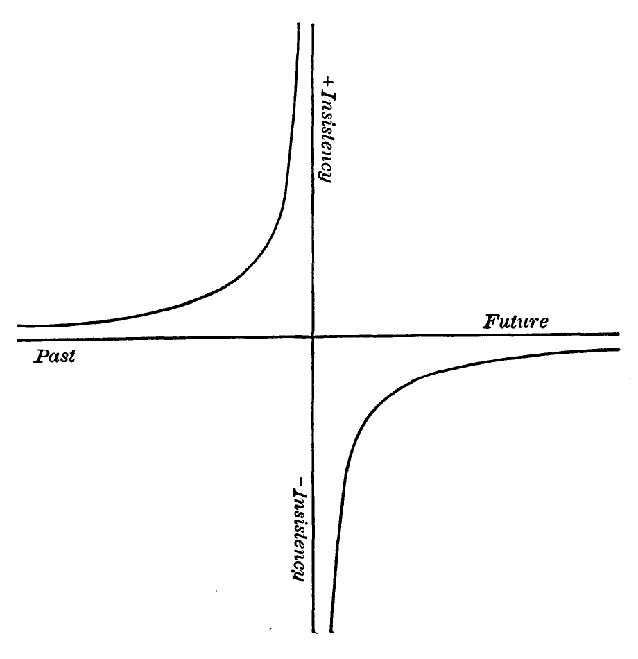

概要
これは何かアメリカの哲学者チャールズ・サンダース・パース（Charles Sanders Peirce・1839–1914）が 1892 年に書いた論文「The Law of Mind（心の法則）」の全文を、段ごとに日本語に訳したページです。パースはこの論文で、心の法則はただ一つだとし、観念は連続して広がり、ほかの観念に働きかける、と書きました。広がるうちに強さを失い、一般性を得ます。連続という考えを大事にする立場を、パースはこの論文で synechism と名づけています。
- 段ごとに訳を置き、その下の「原文」の畳みに英語の原文を置きました。
- 段の頭の「¶2 p.533–534」は、段の通し番号と、誌面の頁です。訳と原文の中の [p.534] は、誌面の頁が変わる所です。
- 「訳注：」で始まる小さな字の行は、Claude の注です。
- パースは翌年の論文「進化的な愛」（1893）で、この論文を挙げて synechism を語っています。その全文の訳は「パース「進化的な愛」を、日本語で読む」にあります。二つの論文が何を言っているかの解説は、読み物「パースの創造的な愛と、アブダクション」にあります。
- はじめの二段から、観念の連続まで：心の法則を一つの式で示し、過ぎた観念がどうして今にありうるかを問います。答えは、意識が無限小の時間の幅を持つことです。
- 無限と連続の一般論：数えられる無限と数えられない無限を分け、連続とは何かを、カントとカントールの定義を直して定めます。数式の段があります。
- 時間の分析から、論理の形まで：時間の向き、感じの強さと広がり、観念の働きかけと習慣を見て、心の働きが演繹・帰納・仮説の形式に従うことを示します。
- 心の働きの不確かさから、結びまで：心の法則は物質の法則のように固くないこと、人格は観念の協調であること、心と心がどう通じるかを述べて閉じます。
- パースの脚注：誌面の脚注一つです。
載せた版と、権利について
- 原文は 1892 年に出版され、パースは 1914 年に亡くなっています。日本でも米国でも、著作権の保護期間は終わっています（パブリックドメイン）。
- 照らした誌面の走査は、JSTOR の Early Journal Content です。JSTOR の利用条件は、Early Journal Content を、非営利の目的なら全部でも一部でも写して配ってよいとし、出どころとして JSTOR を示すよう求めています（JSTOR の利用条件）。このページは非営利で、上の走査へのリンクで出どころを示しています。p.550 の図は、この走査から切り出しました。
- 原文の文字は、Wikisource の文字起こしをもとにし、誌面の走査と照らして直しました。直したのは、ギリシア文字（τύχη・ἀνάγκη）、記号の付いた字（coördinate・amœba）、文字起こしで落ちた一文と式、斜体、頁、節の見出しの句点、脚注の印です。誌面の誤植と見える所も、誌面のまま置きました（¶39 の "gaps he made" など。訳注で触れています）。
- 二項定理の式（¶29〜¶32）は、誌面では分数を縦に積んだ形ですが、ここでは一行に書き直しました。
- 段の分け方は Wikisource のままです。誌面で頁の頭から新しい段になる三か所（¶39・¶43・¶65）は、原文も訳も段の中で行を空けました。
- 訳は、既に出ている日本語訳を見ずに、Claude が原文から付けました。
訳語のそろえ方
訳語は、前の一本「進化的な愛」の訳と、読み物「パースの創造的な愛と、アブダクション」にそろえました。
| 原語 | 訳語 |
|---|---|
| idea・general idea | 観念・一般観念。この論文では、心の中の出来事としての意味が強いので、全体を「観念」にしました |
| feeling | 感じ |
| tychism・synechism | 原語のまま書きました。synechism は、初めに「連続の論」を添えました |
| instant・moment | 時点・瞬間。パースが ¶17 で、instant は時間の点、moment は無限小の長さ、と定めています |
| affect・insistency | 働きかける・迫る強さ |
| continuity・continuum・infinitesimal | 連続・連続体・無限小 |
題と、はじめの二段
¶1 p.533
心の法則
原文（¶1）
THE LAW OF MIND.
¶2 p.533–534
1891 年 1 月の『モニスト（The Monist）』に載せた論文で、私は、どんな観念（idea）が哲学の体系の縦糸をなすべきかを示そうと努め、とりわけ絶対的な偶然（absolute chance）という観念を強調した。1892 年 4 月号では、その考え方をさらに擁護する論を張った。この考え方は tychism（τύχη、偶然から）と名づけておくのが便利だろう。哲学を真剣に学ぶ者は、この学説を急いで受け入れたり退けたりはしないだろう。しかし彼は、そこに思弁的な思考がとりうる主な態度の一つを見てとり、哲学の根本の問いに判定を下すのは、一人の個人の仕事でも、一つの世代（an age）の仕事でもない、と感じるだろう。それは、一つの時代全体（a whole era）をかけてやり遂げる仕事である。私はまず、tychism が進化の宇宙論（evolutionary cosmology）を生まずにはいないことを示した。そこでは、自然と心（mind）のあらゆる規則性が成長の産物とみなされる。また、tychism はシェリング風の観念論も生まずにはいない。その観念論は、物質を、特殊化し部分的に死んだ心にすぎないとみなす。心の伝記（mental biographies）を調べることに興味のある人のために述べておくと、私はコンコードの近く、つまりケンブリッジで生まれ育った。それは、エマソンやヘッジやその友人たちが、シェリングから受け取った観念を広めていた頃である。シェリングはシェリングで、それをプロティノスやベーメから、あるいは東洋の途方もない神秘主義に取りつかれた、どこの誰とも知れない心から受け取っていた。しかし、ケンブリッジの空気には、コンコードの超越主義に対する防腐剤が多く含まれていた。そして私は、その病毒に少しでも感染した覚えはない。それでもおそらく、何らかの培養された桿菌、つまりこの病の良性の形が、知らぬ間に私の魂に植えつけられており、それが長い潜伏の後に、[p.534] 数学の概念と物理の研究での訓練によって変えられて、いま表面に現れてきているのだろう。
訳注：1891 年 1 月の論文は「理論の建築術（The Architecture of Theories）」、1892 年 4 月の論文は「必然論の教義の吟味（The Doctrine of Necessity Examined）」を指すと思われる（題の訳は仮）。
訳注：ヘッジはフレデリック・ヘンリー・ヘッジ（Frederic Henry Hedge）、ベーメ（Boehm）はヤーコプ・ベーメ（Jakob Böhme）を指すと思われる。
原文（¶2）
In an article published in The Monist for January 1891, I endeavored to show what ideas ought to form the warp of a system of philosophy, and particularly emphasised that of absolute chance. In the number of April 1892, I argued further in favor of that way of thinking, which it will be convenient to christen tychism (from τύχη, chance). A serious student of philosophy will be in no haste to accept or reject this doctrine; but he will see in it one of the chief attitudes which speculative thought may take, feeling that it is not for an individual, nor for an age, to pronounce upon a fundamental question of philosophy. That is a task for a whole era to work out. I have begun by showing that tychism must give birth to an evolutionary cosmology, in which all the regularities of nature and of mind are regarded as products of growth, and to a Schelling-fashioned idealism which holds matter to be mere specialised and partially deadened mind. I may mention, for the benefit of those who are curious in studying mental biographies, that I was born and reared in the neighborhood of Concord,—I mean in Cambridge,—at the time when Emerson, Hedge, and their friends were disseminating the ideas that they had caught from Schelling, and Schelling from Plotinus, from Boehm, or from God knows what minds stricken with the monstrous mysticism of the East. But the atmosphere of Cambridge held many an antiseptic against Concord transcendentalism; and I am not conscious of having contracted any of that virus. Nevertheless, it is probable that some cultured bacilli, some benignant form of the disease was implanted in my soul, unawares, and that now, after long incubation, it comes to the surface, modified by [p.534] mathematical conceptions and by training in physical investigations.
¶3 p.534
宇宙論の研究の次の一歩は、心の働き（mental action）の一般法則を調べることでなければならない。そうするにあたって、私はしばらく tychism を視野から外す。最初の『モニスト』の論文で、哲学に最も欠かせないものの一つとして挙げながら、そこでは詳しく論じなかったもう一つの概念に、自由で独立した展開の場を与えるためである。それは連続（continuity）の観念である。連続を、私がこれから定義する意味で、哲学において第一の重要さをもつ観念とみなす傾向は、synechism（連続の論）と呼ぶのが便利だろう。この論文の主な目的は、synechism とは何か、そしてそれがどこへ導くかを示すことである。私はかなり前に、『思弁哲学雑誌（Journal of Speculative Philosophy）』（第 3 巻）でこの学説を展開しようと試みた。しかし今では、その説明を改善することができる。あのときの説明では、私は唯名論（nominalism）的な先入見に少し目をくらまされていた。それに触れておくのは、この論文で十分に説明していない点が、あの以前の論文で明らかにされていると気づく読者がいるかもしれないからである。
訳注：パースは第 3 巻と書くが、認知をめぐる三篇（1868–69）は第 2 巻に載っていると思われる。パースの書き違いか、別の論文を指すのかは確かめていない。
原文（¶3）
The next step in the study of cosmology must be to examine the general law of mental action. In doing this, I shall for the time drop my tychism out of view, in order to allow a free and independent expansion to another conception signalised in my first Monist-paper as one of the most indispensable to philosophy, though it was not there dwelt upon ; I mean the idea of continuity. The tendency to regard continuity, in the sense in which I shall define it, as an idea of prime importance in philosophy may conveniently be termed synechism. The present paper is intended chiefly to show what synechism is, and what it leads to. I attempted, a good many years ago, to develop this doctrine in the Journal of Speculative Philosophy (Vol. III.); but I am able now to improve upon that exposition, in which I was a little blinded by nominalistic prepossessions. I refer to it, because students may possibly find that some points not sufficiently explained in the present paper are cleared up in those earlier ones.
法則とは何か
¶4 p.534
法則とは何か
原文（¶4）
WHAT THE LAW IS.
¶5 p.534
論理的な分析を心の現象に当てはめると、心の法則（law of mind）はただ一つしかないことが分かる。すなわち、観念には、連続的に（continuously）広がり、ある種の他の観念に働きかける（affect）傾向がある。その他の観念とは、働きかけの受けやすさ（affectibility）という特別な関係でその観念と結ばれているものである。この広がりの中で、観念は強さ（intensity）を失い、とりわけ他の観念に働きかける力を失う。しかし一般性を得て、他の観念と溶け合う。
原文（¶5）
Logical analysis applied to mental phenomena shows that there is but one law of mind, namely, that ideas tend to spread continuously and to affect certain others which stand to them in a peculiar relation of affectibility. In this spreading they lose intensity, and especially the power of affecting others, but gain generality and become welded with other ideas.
¶6 p.534
私は便宜のために、この定式をはじめに書いておく。そして、これからそれに注釈を加えていく。
原文（¶6）
I set down this formula at the beginning, for convenience; and now proceed to comment upon it.
観念の個別性
¶7 p.534
観念の個別性
原文（¶7）
INDIVIDUALITY OF IDEAS.
¶8 p.534–535
私たちは、観念について、再生されるとか、心から心へ受け渡されるとか、互いに似ている、似ていないとか言い、要するに、それが実体のある物であるかのように語ることに慣れている。そうした言い方に、もっともな異論を唱えることはできない。しかし、「観念（idea）」という語を、個々の意識（consciousness）の中の出来事という意味にとるなら、ひとたび過ぎ去った観念は永遠に去ったのであり、それが再び現れたと思われるものは、別の観念であることは明らかである。この二つの観念は、同じ[p.535]意識の状態の中に現前していない。だから、両者を比べることはとうていできない。したがって、それらが似ていると言うことは、両方がもはや存在しなくなった後で、魂の奥底からの隠れた力が、私たちに思考の中でそれらを結びつけさせる、という意味にしかなりえない。ここでついでに注意しておくと、一般に認められている連合の二つの原理、すなわち接近（contiguity）と類似（similarity）のうち、前者は外からの力による結びつきであり、後者は内からの力による結びつきである。
原文（¶8）
We are accustomed to speak of ideas as reproduced, as passed from mind to mind, as similar or dissimilar to one another, and, in short, as if they were substantial things; nor can any reasonable objection be raised to such expressions. But taking the word "idea" in the sense of an event in an individual consciousness, it is clear that an idea once past is gone forever, and any supposed recurrence of it is another idea. These two ideas are not present in the same [p.535] state of consciousness, and therefore cannot possibly be compared. To say, therefore, that they are similar can only mean that an occult power from the depths of the soul forces us to connect them in our thoughts after they are both no more. We may note, here, in passing that of the two generally recognised principles of association, contiguity and similarity, the former is a connection due to a power without, the latter a connection due to a power within.
¶9 p.535
しかし、まったく過ぎ去った観念が、そもそもなお考えられていると言うことは、何を意味しうるのだろうか。それはまったく知りえないものである。過去の観念が、それから完全に切り離された未来の観念に何らかの仕方で働きかける、と言うことに、どんなはっきりした意味が付きうるだろうか。それを主張しても否定しても、どんな場合にも感じとれる違いが何も生じない語句は、ただのたわごとである。
原文（¶9）
But what can it mean to say that ideas wholly past are thought of at all, any longer? They are utterly unknowable. What distinct meaning can attach to saying that an idea in the past in any way affects an idea in the future, from which it is completely detached? A phrase between the assertion and the denial of which there can in no case be any sensible difference is mere gibberish.
¶10 p.535
この点にはこれ以上こだわらない。哲学ではありふれたことだからである。
原文（¶10）
I will not dwell further upon this point, because it is a commonplace of philosophy.
観念の連続
¶11 p.535
観念の連続
原文（¶11）
CONTINUITY OF IDEAS.
¶12 p.535
私たちの前には、唯名論（nominalism）と実在論（realism）の問題に似た、難しい問いがある。しかし、ひとたびそれをはっきりと定式化すれば、論理は一つの答えにしか余地を残さない。過去の観念は、どのようにして現前しうるのか。代理によって（vicariously）現前しうるのか。ある程度までは、そうかもしれない。しかし、それだけではない。もしそれだけなら、過去の観念がその代理の表象とどのように関係しうるのか、という問いが生じるからである。その関係は観念どうしの間のものなので、何らかの意識の中にしか存在しえない。ところが、あの過去の観念は、それを含んでいた唯一の意識である、あの過去の意識のほかには、どんな意識の中にもなかった。そして、その過去の意識は、代理の観念を含んではいなかった。
原文（¶12）
We have here before us a question of difficulty, analogous to the question of nominalism and realism. But when once it has been clearly formulated, logic leaves room for one answer only. How can a past idea be present? Can it be present vicariously? To a certain extent, perhaps; but not merely so; for then the question would arise how the past idea can be related to its vicarious representation. The relation, being between ideas, can only exist in some consciousness: now that past idea was in no consciousness but that past consciousness that alone contained it; and that did not embrace the vicarious idea.
¶13 p.535
ここで、過去の観念はどんな意味でも現前しえない、という結論に飛びつく心もあるだろう。しかしそれは性急で、論理にかなっていない。それに、過去についての私たちの知識の全部をただの迷妄だと言い切るのは、なんと突飛なことだろう。それでも、過去は、カントの物自体（thing-in-itself）と同じくらい完全に、可能な経験の境の外にあるように見える。
訳注：原文は bonds。bounds（境）の誤植と思われるので、「境」と訳した。
原文（¶13）
Some minds will here jump to the conclusion that a past idea cannot in any sense be present. But that is hasty and illogical. How extravagant, too, to pronounce our whole knowledge of the past to be mere delusion! Yet it would seem that the past is as completely beyond the bonds of possible experience as a Kantian thing-in-itself.
¶14 p.535–536
過去の観念は、どのようにして現前しうるのか。代理によってではない。それなら、直接の知覚によってのみである。言いかえれば、現前するためには、それはそのこと自体によって（ipso facto）現前していなければならない。つまり、それはまったく過ぎ去ったものではありえない。それは[p.536]過ぎ去りつつあるもの、無限小（infinitesimal）だけ過去のもの、指定しうるどんな過去の日時よりも過去でないもの、でしかありえない。こうして私たちは、現在は、実在する無限小の段階の系列によって過去とつながっている、という結論に導かれる。
原文（¶14）
How can a past idea be present? Not vicariously. Then, only by direct perception. In other words, to be present, it must be ipso facto present. That is, it cannot be wholly past; it can only be [p.536] going, infinitesimally past, less past than any assignable past date. We are thus brought to the conclusion that the present is connected with the past by a series of real infinitesimal steps.
¶15 p.536
意識は必ず時間の一区間を含む、ということは、すでに心理学者たちによって示唆されてきた。しかし、もし有限の時間が意味されているなら、その意見は支持できない。現在より半秒前の感覚（sensation）がなお直接に私の前にあるとすれば、同じ原理によって、その前の感覚も直接に現前していることになり、以下同様に限りなく（ad infinitum）続くことになる。ところで、ある時間、たとえば一年が経てば、観念はもはやそのこと自体によって（ipso facto）現前してはいない。そういう時間がある以上、どんなに短くても、有限の区間ならどれについても同じことが言える。
原文（¶15）
It has already been suggested by psychologists that consciousness necessarily embraces an interval of time. But if a finite time be meant, the opinion is not tenable. If the sensation that precedes the present by half a second were still immediately before me, then, on the same principle the sensation preceding that would be immediately present, and so on ad infinitum. Now, since there is a time, say a year, at the end of which an idea is no longer ipso facto present, it follows that this is true of any finite interval, however short.
¶16 p.536
それでも、意識は本質的に時間の一区間をおおっていなければならない。もしそうでなければ、私たちは時間について何の知識も得られず、時間についての真実の認識が得られないだけでなく、どんな概念も得られないことになるからである。したがって、私たちは時間の無限小の区間にわたって直接に意識している、と言わざるをえない。
原文（¶16）
But yet consciousness must essentially cover an interval of time; for if it did not, we could gain no knowledge of time, and not merely no veracious cognition of it, but no conception whatever. We are, therefore, forced to say that we are immediately conscious through an infinitesimal interval of time.
¶17 p.536–537
必要なのはこれだけである。なぜなら、この無限小の区間では、意識は主観的な意味で、つまり持続という属性をもつ主体あるいは実体とみなされた意味で連続している（continuous）だけではないからである。それは直接の意識であるから、その対象もそのこと自体によって（ipso facto）連続している。実際、この無限小に広がった意識は、その内容を広がったものとして直接に感じること（feeling）である。これは後でさらに明らかにする。無限小の区間において、私たちは、その始め・中ほど・終わりの時間的な順序を直接に知覚する。もちろん、それは再認（recognition）という仕方によってではない。再認は過去についてしかないからである。そうではなく、直接の感じという仕方によってである。さて、この区間に別の区間が続く。その始めは前の区間の中ほどであり、その中ほどは前の区間の終わりである。ここで私たちは、この区間の始め・中ほど・終わり、言いかえれば第二・第三・第四の時点の時間的な順序を直接に知覚する。この二つの直接の知覚から、私たちは四つの時点すべての関係について、間接の、つまり推論による知覚を得る。この間接の知覚は、客観的には、つまり表象される対象については、四つの時点にわたって広がっている。しかし主観的には、つまりそれ自体が持続の主体であるものとしては、第二の瞬間の中に完全に含まれている。〔読者は、私が instant（時点）という語を時間の一[p.537]点の意味に、moment（瞬間）という語を無限小の持続の意味に使っていることに注意されたい。〕もし、ここに提案した理論によれば、私たちは四つの時点の継起について間接の知覚以上のものをもつはずだ、と反論されるなら、私はそれを認める。二つの無限小の区間の和はそれ自体が無限小であり、したがって直接に知覚されるからである。それは区間全体においては直接に知覚されるが、区間の後の三分の二においては間接にしか知覚されない。さて、比べることで知覚するという、こうした推論の働きが、いくらでも（indefinitely）続くとしよう。そうすれば、最後の瞬間が客観的には系列の全体を含むことは明らかである。ただいくらでも続くだけでなく、有限の時間にわたって推論が連続して流れるとしよう。そうすれば、その結果は、最後の瞬間における、時間の全体についての間接の客観的な意識となるだろう。この最後の瞬間には、系列の全体が再認される、つまり前に知られていたものとして知られる。ただし最後の瞬間だけは別で、それはもちろん、それ自身にとっては絶対に再認できない。いや、この最後の瞬間でさえ、ほかと同じように再認される。あるいは少なくとも、ちょうど再認され始めているだろう。ここには小さな elenchus（エレンコス）、つまり矛盾の見かけがあるが、反省の通常の論理で十分に解くことができる。
訳注：〔 〕は原文の角括弧の挿入を写したもの。
原文（¶17）
This is all that is requisite. For, in this infinitesimal interval, not only is consciousness continuous in a subjective sense, that is, considered as a subject or substance having the attribute of duration; but also, because it is immediate consciousness, its object is ipso facto continuous. In fact, this infinitesimally spread-out consciousness is a direct feeling of its contents as spread out. This will be further elucidated below. In an infinitesimal interval we directly perceive the temporal sequence of its beginning, middle, and end,—not, of course, in the way of recognition, for recognition is only of the past, but in the way of immediate feeling. Now upon this interval follows another, whose beginning is the middle of the former, and whose middle is the end of the former. Here, we have an immediate perception of the temporal sequence of its beginning, middle, and end, or say of the second, third, and fourth instants. From these two immediate perceptions, we gain a mediate, or inferential, perception of the relation of all four instants. This mediate perception is objectively, or as to the object represented, spread over the four instants ; but subjectively, or as itself the subject of duration, it is completely embraced in the second moment. [The reader will observe that I use the word instant to mean a point [p.537] of time, and moment to mean an infinitesimal duration.] If it is objected that, upon the theory proposed, we must have more than a mediate perception of the succession of the four instants, I grant it; for the sum of the two infinitesimal intervals is itself infinitesimal, so that it is immediately perceived. It is immediately perceived in the whole interval, but only mediately perceived in the last two thirds of the interval. Now, let there be an indefinite succession of these inferential acts of comparative perception; and it is plain that the last moment will contain objectively the whole series. Let there be, not merely an indefinite succession, but a continuous flow of inference through a finite time ; and the result will be a mediate objective consciousness of the whole time in the last moment. In this last moment, the whole series will be recognised, or known as known before, except only the last moment, which of course will be absolutely unrecognisable to itself. Indeed, even this last moment will be recognised like the rest, or, at least be just beginning to be so. There is a little elenchus, or appearance of contradiction, here, which the ordinary logic of reflection quite suffices to resolve.
無限と連続の一般論
¶18 p.537
無限と連続の一般論
原文（¶18）
INFINITY AND CONTINUITY, IN GENERAL.
¶19 p.537
この二世代のあいだに微分法を扱ってきた数学者の大半は、無限小の量は不合理だという意見であった。もっとも彼らは、いつもの慎重さから、しばしば「あるいは、少なくとも、無限小の概念はたいへん難しいので、実際には確信と安全をもってそれについて推論することはできない」と付け加えてきた。そこで、この困難を避けるために、あるいは、ある人々の言うところでは「無限小」という語の意味を説明するために、極限の学説（the doctrine of limits）が考え出された。この学説は、何らかの形で、すべての教科書で教えられている。もっとも、ある教科書では、この事柄についての別の見方としてしか教えられていない。この学説は計算の目的には十分に役立つ。もっとも、その応用においてさえ困難がある。
原文（¶19）
Most of the mathematicians who during the last two generations have treated the differential calculus have been of the opinion that an infinitesimal quantity is an absurdity; although, with their habitual caution, they have often added "or, at any rate, the conception of an infinitesimal is so difficult, that we practically cannot reason about it with confidence and security." Accordingly, the doctrine of limits has been invented to evade the difficulty, or, as some say, to explain the signification of the word "infinitesimal." This doctrine, in one form or another, is taught in all the text-books, though in some of them only as an alternative view of the matter; it answers well enough the purposes of calculation, though even in that application it has its difficulties.
¶20 p.537–538
関係項の論理（logic of relatives）のための厳密な記法によってこの主題が照らし出されたことで、無限小の観念が矛盾を含まないことは、私にははっきりと明らかになっていた。それは、私がゲオルク・カントール博士の著作を知る前のことである（もっとも、その著作の多くは、[p.538]『数学年報（Mathematische Annalen）』や『ボルヒャルト誌（Borchardt's Journal）』に、まだ『アクタ・マテマティカ（Acta Mathematica）』にではないにしても、すでに出ていた。どれも第一級の数学の雑誌である）。カントールの著作では、同じ見方が、並外れた天才と鋭い論理によって擁護されている。
訳注：『ボルヒャルト誌』は Journal für die reine und angewandte Mathematik（いわゆるクレレ誌）を、当時の編集者ボルヒャルトの名で呼んだものと思われる。
原文（¶20）
The illumination of the subject by a strict notation for the logic of relatives had shown me clearly and evidently that the idea of an infinitesimal involves no contradiction, before I became acquainted with the writings of Dr. Georg Cantor (though many of these had [p.538] already appeared in the Mathematische Annalen and in Borchardt's Journal, if not yet in the Acta Mathematica, all mathematical journals of the first distinction), in which the same view is defended with extraordinary genius and penetrating logic.
¶21 p.538
広く行きわたった意見では、私たちが推論できる数は、少なくとも普通の推論の仕方では、有限の数だけである。あるいは、ある著者たちの言い方では、数学的に推論できる数は有限の数だけである。しかし、これは理にかなわない偏見である。私はずっと以前に、有限の集まりが無限の集まりから区別されるのは、ただ一つの事情とその帰結によってだけであることを示した。すなわち、有限の集まりには、その発見者ド・モルガンが「量の転置の三段論法（syllogism of transposed quantity）」と呼んだ、特別で普通でない推論の仕方が当てはまる、ということである。
訳注：「ずっと以前に示した」は、パースの 1881 年の論文「数の論理について（On the Logic of Number）」を指すと思われる。確かめていない。
原文（¶21）
The prevalent opinion is that finite numbers are the only ones that we can reason about, at least, in any ordinary mode of reasoning, or, as some authors express it, they are the only numbers that can be reasoned about mathematically. But this is an irrational prejudice. I long ago showed that finite collections are distinguished from infinite ones only by one circumstance and its consequences, namely, that to them is applicable a peculiar and unusual mode of reasoning called by its discoverer, De Morgan, the "syllogism of transposed quantity."
¶22 p.538
バルザックは『結婚の生理学（Physiologie du mariage）』の序で、若いフランス人の男は誰もが、あるフランス人の女を誘惑したことを自慢する、と述べている。さて、女は一度しか誘惑されえず、フランス人の女はフランス人の男より多くはないので、もしこれらの自慢が本当なら、誘惑を免れるフランス人の女は一人もいない、ということになる。もしその数が有限なら、この推論は成り立つ。しかし、人口は絶えず増えており、誘惑される者は誘惑する者より平均して若いので、この結論は真であるとは限らない。同じように、ド・モルガンは保険数理の専門家（actuary）として、もし保険会社が被保険者に、利子を含めて彼らがこれまで会社に払ってきた額より平均して多くを払うなら、その会社は損をするにちがいない、と論じることもできただろう。しかし、現代の保険数理の専門家なら誰でも、そこに誤りを見てとるだろう。その事業は絶えず拡大しているからである。しかし、もし戦争や何か別の大変動のために被保険者の部類が有限のものになれば、その結論は結局、痛ましいほど正しいことが分かるだろう。上の二つの推論は、量の転置の三段論法の例である。
訳注：原文の「escape seduction, If」は、コンマの後に大文字が来ており、ピリオドの誤植と思われる。
原文（¶22）
Balzac, in the introduction of his Physiologie du mariage, remarks that every young Frenchman boasts of having seduced some Frenchwoman. Now, as a woman can only be seduced once, and there are no more Frenchwomen than Frenchmen, it follows, if these boasts are true, that no French women escape seduction, If their number be finite, the reasoning holds. But since the population is continually increasing, and the seduced are on the average younger than the seducers, the conclusion need not be true. In like manner, De Morgan, as an actuary, might have argued that if an insurance company pays to its insured on an average more than they have ever paid it, including interest, it must lose money. But every modern actuary would see a fallacy in that, since the business is continually on the increase. But should war, or other cataclysm, cause the class of insured to be a finite one, the conclusion would turn out painfully correct, after all. The above two reasonings are examples of the syllogism of transposed quantity.
¶23 p.538
有限の集まりと無限の集まりは、前者には量の転置の三段論法が当てはまることによって区別される、という命題は、科学としての算術の土台となる命題とみなされるべきである。
原文（¶23）
The proposition that finite and infinite collections are distinguished by the applicability to the former of the syllogism of transposed quantity ought to be regarded as the basal one of scientific arithmetic.
¶24 p.538–539
もしある人が論理的に推論する仕方を知らず、ただ、うまくいった他の推論に似た推論を盲目的に引き出す経験則（rule of thumb）[p.539]を使うだけなら、その人はもちろん、無限の数について絶えず誤りに陥るだろう。言わねばならないが、かなり優れた数学者の多く、いや卓越した数学者でさえ、論理的に推論する仕方を知らないこの部類に入る。実のところ、そういう人々はまったく推論していないのである。しかし、推論する少数の人々にとっては、無限の数について推論するほうが、有限の数について推論するより易しい。込み入った量の転置の三段論法が必要とされないからである。たとえば、全体はその部分より大きいということは、公理ではない。際立って推論の下手なユークリッドは、それを公理にしてしまったのだが。それは、量の転置の三段論法によってたやすく証明される定理であり、ほかの仕方では証明されない。それは有限の集まりについては真であり、無限の集まりについては偽である。例を挙げれば、整数の一部は偶数である。それでも、偶数はすべての数より少なくはない。これは明らかな命題である。整数の系列全体のどの数も二倍すれば、その結果は偶数の系列になるからである。
訳注：原文では頁の変わり目 [p.539] が「rule of thumb」の語句の途中にある。訳ではその語句の直後に置いた。
原文（¶24）
If a person does not know how to reason logically, and I must say that a great many fairly good mathematicians,—yea distinguished ones,—fall under this category, but simply uses a rule of [p.539] thumb in blindly drawing inferences like other inferences that have turned out well, he will, of course, be continually falling into error about infinite numbers. The truth is such people do not reason, at all. But for the few who do reason, reasoning about infinite numbers is easier than about finite numbers, because the complicated syllogism of transposed quantity is not called for. For example, that the whole is greater than its part is not an axiom, as that eminently bad reasoner, Euclid, made it to be. It is a theorem readily proved by means of a syllogism of transposed quantity, but not otherwise. Of finite collections it is true, of infinite collections false. Thus, a part of the whole numbers are even numbers. Yet the even numbers are no fewer than all the numbers; an evident proposition since if every number in the whole series of whole numbers be doubled, the result will be the series of even numbers.
¶25 p.539
1, 2, 3, 4, 5, 6, 以下同様。
原文（¶25）
1, 2, 3, 4, 5, 6, etc.
¶26 p.539
2, 4, 6, 8, 10, 12, 以下同様。
原文（¶26）
2, 4, 6, 8, 10, 12, etc.
¶27 p.539
だから、どの数にも、それぞれ別の偶数がある。実際、互いに異なる数の二倍は、互いに異なる数と同じ数だけある。しかし、数の二倍はすべて偶数である。
原文（¶27）
So for every number there is a distinct even number. In fact, there are as many distinct doubles of numbers as there are of distinct numbers. But the doubles of numbers are all even numbers.
¶28 p.539
実のところ、無限の集まりには、大きさの段階が二つしかない。終わりのない（endless）ものと、数えられない（innumerable）ものである。有限の集まりが無限の集まりから、それに特別な推論の仕方、つまり量の転置の三段論法が当てはまることによって区別されるのとちょうど同じように、さきに挙げた論文で示したように、数えられる（numerable）集まりは数えられない集まりから、それにある推論の仕方、つまりフェルマー的推論（Fermatian inference）、あるいは時に不適切に「数学的帰納法」と呼ばれるものが当てはまることによって区別される。
訳注：「さきに挙げた論文」は、¶21 の「ずっと以前に示した」論文を指すと思われる。
原文（¶28）
In truth, of infinite collections there are but two grades of magnitude, the endless and the innumerable. Just as a finite collection is distinguished from an infinite one by the applicability to it of a special mode of reasoning, the syllogism of transposed quantity, so, as I showed in the paper last referred to, a numerable collection is distinguished from an innumerable one by the applicability to it of a certain mode of reasoning, the Fermatian inference, or, as it is sometimes improperly termed, "mathematical induction."
¶29 p.539–540
この推論の例として、整数の冪についての二項定理の、オイラーによる証明を挙げることができる。定理は次のとおりである。(x + y)n は、n が整数であるとき、一続きの項の和に展開できる。その最初の項は xny0 であり、ほかの各項は、すぐ前の項から、x の指数を 1 減らしてその指数を掛け、同時に y の指数を 1 増やしてその増やした指数で割ることによって得られる。さて、この命題がある指数 n = M について真であると仮定しよう。すると、それは n = M + 1 についても真でなければならない。[p.540] 実際、(x + y)M の展開の項の一つを Axpyq と書くとしよう。すると、この項と、それに続く二つの項は次のようになる。
原文（¶29）
As an example of this reasoning, Euler's demonstration of the binomial theorem for integral powers may be given. The theorem is that (x + y)n, where n is a whole number, may be expanded into the sum of a series of terms of which the first is xny0 and each of the others is derived from the next preceding by diminishing the exponent of x by 1 and multiplying by that exponent and at the same time increasing the exponent of y by 1 and dividing by that increased exponent. Now, suppose this proposition to be true for a certain exponent, n = M, then it must also be true for n = M + 1. [p.540] For let one of the terms in the expansion of (x + y)M be written Axpyq. Then, this term with the two following will be
¶30 p.540
Axpyq + Ap/(q+1)xp−1yq+1 + Ap/(q+1) · (p−1)/(q+2)xp−2yq+2
訳注：誌面では A の下に分数を縦に積んで組んであり、A にその分数を掛ける意味。ここでは添字の形で一行に写した。
原文（¶30）
Axpyq + Ap/(q+1)xp−1yq+1 + Ap/(q+1) · (p−1)/(q+2)xp−2yq+2
¶31 p.540
さて、(x + y)M に x + y を掛けて (x + y)M+1 を得るとき、私たちは、まず x で掛け、次に x の代わりに y で掛けて、二つの結果を足す。x で掛けるとき、上の三つの項のうち、xpyq+1 を含む項を与えるのは二番目の項だけであり、xp−1yq+2 の項を与えるのは三番目の項だけである。そして y で掛けるとき、xpyq+1 の項を与えるのは最初の項だけであり、xp−1yq+2 の項を与えるのは二番目の項だけである。したがって、同類項を足し合わせると、(x + y)M+1 の展開における xpyq+1 の係数は、上の三つの項のうち最初の二つの係数の和になり、xp−1yq+2 の係数は、あとの二つの項の係数の和になることがわかる。したがって、(x + y)M+1 の展開における隣り合う二つの項は、次のようになる。
原文（¶31）
Now, when (x + y)M is multiplied by x + y to give (x + y)M+1, we multiply first by x and then by y instead of by x and add the two results. When we multiply by x, the second of the above three terms will be the only one giving a term involving xpyq+1 and the third will be the only one giving a term in xp−1yq+2; and when we multiply by y the first will be the only term giving a term in xpyq+1, and the second will be the only term giving a term in xp−1yq+2. Hence, adding like terms, we find that the coefficient of xpyq+1 in the expansion of (x + y)M+1 will be the sum of the coefficients of the first two of the above three terms, and that the coefficient of xp−1yq+2 will be the sum of the coefficients of the last two terms. Hence, two successive terms in the expansion of (x + y)M+1 will be
¶32 p.540
A[1 + p/(q+1)] xpyq+1 + Ap/(q+1)[1 + (p−1)/(q+2)] xp−1yq+2
= A(p+q+1)/(q+1)xpyq+1 + A(p+q+1)/(q+1) · p/(q+2)xp−1yq+2.
原文（¶32）
A[1 + p/(q+1)] xpyq+1 + Ap/(q+1)[1 + (p−1)/(q+2)] xp−1yq+2
= A(p+q+1)/(q+1)xpyq+1 + A(p+q+1)/(q+1) · p/(q+2)xp−1yq+2.
¶33 p.540
こうして、項の続き方がこの規則に従うことがわかる。したがって、ある整数の冪がこの規則に従うなら、その次に高い冪もまた従う。ところが、一乗は明らかにこの規則に従う。したがって、すべての冪がこの規則に従う。
原文（¶33）
It is, thus, seen that the succession of terms follows the rule. Thus if any integral power follows the rule, so also does the next higher power. But the first power obviously follows the rule. Hence, all powers do so.
¶34 p.540–541
このような推論は、一つの列に並べることができ、その列は終わりのない（endless）ものであってもよいが、各成員が確定した整数の番号を受けるように番号を付けられる、そういう対象の集まりなら、どれについても成り立つ。たとえば、すべての整数は、そのような数えられる（numerable）集まりをなす。また、有限個の整数に、何か確定した規則に従って演算を施した結果として得られるすべての数も、そのような集まりをなす。というのも、それらは次のように一つの列に並べることができるからである。F を演算の記号としよう。まず 1 に演算を施し、F(1) を得る。次に、二つ目の 1 に演算を施し、F(1,1) を得る。次に 2 を入れ、三番目に F(2)、四番目に F(2,1)、五番目に F(1,2)、六番目に F(2,2) を得る。次に三つ目の変数を使い、七番目に F(1,1,1)、八番目に F(2,1,1)、九番目に F(1,2,1)、十番目に F(2,2,1)、十一番目に F(1,1,2)、十二番目に F(2,1,2)、十三番目に F(1,2,2)、[p.541] 十四番目に F(2,2,2) を得る。次に 3 を入れる。以下同様に、新しい変数と新しい数字とを交互に入れていく。このようにすれば、変数の整数値のどの並びも、この列の中に番号の付いた場所を得ることは明らかである。[注98]
原文（¶34）
Such reasoning holds good of any collection of objects capable of being ranged in a series which though it may be endless, can be numbered so that each member of it receives a definite integral number. For instance, all the whole numbers constitute such a numerable collection. Again, all numbers resulting from operating according to any definite rule with any finite number of whole numbers form such a collection. For they may be arranged in a series thus. Let F be the symbol of operation. First operate on 1, giving F(1). Then, operate on a second 1, giving F(1,1). Next, introduce 2, giving 3rd, F(2); 4th, F(2,1); 5th, F(1,2); 6th, F(2,2). Next use a third variable giving 7th, F(1,1,1); 8th, F(2,1,1); 9th, F(1,2,1); 10th, F(2,2,1); 11th, F(1,1,2); 12th, F(2,1,2); 13th, F(1,2,2); [p.541] 14th, F(2,2,2). Next introduce 3, and so on, alternately introducing new variables and new figures; and in this way it is plain that every arrangement of integral values of the variables will receive a numbered place in the series.[注98]
¶35 p.541
終わりはないが数えられる集まり（そう呼ばれるのは、それぞれの成員に別々の整数が一つずつ対応するように並べられるからである）の類は、とても大きい。しかし、確かに数えられない（innumerable）集まりもある。終わりのない小数の列が近づいていくことのできるすべての数の集まりが、それである。ユークリッドの時代から、ある数は無理数（surd）すなわち通約できない（incommensurable）数であって、どんな有限の小数の列によっても、循環小数によっても、正確には表せないことが認められてきた。円周と直径の比がそうであり、それがほぼ 3.1415926 であることを私たちは知っている。この数の計算は 700 桁を超えるまで進められたが、その桁の並びには少しの規則性も現れていない。この数やほかの多くの数が通約できないことの証明は、完全である。通約できない数の集まり全体が数えられないことは、カントールによってはっきりと証明された。その証明は省く。しかし、一つの通約できない数をほかの数から見分けるには、一般に、終わりのない数の列を使う必要があることは、たやすくわかる。さて、それらが正確に表されず、見分けられないのなら、明らかに、それらを線状の列に並べることはできない。
訳注：当時知られていたシャンクスの円周率の計算（707 桁）を指すと思われる（確かめていない）。
原文（¶35）
The class of endless but numerable collections (so called because they can be so ranged that to each one corresponds a distinct whole number) is very large. But there are collections which are certainly innumerable. Such is the collection of all numbers to which endless series of decimals are capable of approximating. It has been recognised since the time of Euclid that certain numbers are surd or incommensurable, and are not exactly expressible by any finite series of decimals, nor by a circulating decimal. Such is the ratio of the circumference of a circle to its diameter, which we know is nearly 3.1415926. The calculation of this number has been carried to over 700 figures without the slightest appearance of regularity in their sequence. The demonstrations that this and many other numbers are incommensurable are perfect. That the entire collection of incommensurable numbers is innumerable has been clearly proved by Cantor. I omit the demonstration; but it is easy to see that to discriminate one from some other would, in general, require the use of an endless series of numbers. Now if they cannot be exactly expressed and discriminated, clearly they cannot be ranged in a linear series.
¶36 p.541–542
一本の線の上、あるいは時間の一つの区間の中には、実数全体と同じだけの数の点があることは明らかである。したがって、これらは数えられない集まりである。多くの数学者は、面の上や立体の中の点は線の上の点よりも多いと、不用意に仮定してきた。しかし、これはカントールによって論駁された。実際、座標（coördinates）の値のどの組にも、別々の一つの数が対応することは明らかである。たとえば、座標の値がすべて 0 と +1 の間にあるとしよう。そこで、小数の第一位に第一の座標の第一の数字を置き、第二位に第二の座 [p.542] 標の第一の数字を置き、というように続け、第一の数字をすべて配り終えたら、同じやり方で第二の数字に進む、というふうにして一つの数を組み立てるとしよう。すると、その結果できた一つの数から、座標の値を読み取ることができるのは明らかである。したがって、それぞれが数えられない値をとる三つ組や四つ組の数も、一つの通約できない数より多くの値をもつわけではない。
原文（¶36）
It is evident that there are as many points on a line or in an interval of time as there are of real numbers in all. These are, therefore, innumerable collections. Many mathematicians have incautiously assumed that the points on a surface or in a solid are more than those on a line. But this has been refuted by Cantor. Indeed, it is obvious that for every set of values of coördinates there is a single distinct number. Suppose, for instance, the values of the coördinates all lie between 0 and +1. Then if we compose a number by putting in the first decimal place the first figure of the first coördinate, in the second the first figure of the second coördi [p.542] nate, and so on, and when the first figures are all dealt out go on to the second figures in like manner, it is plain that the values of the coördinates can be read off from the single resulting number, so that a triad or tetrad of numbers, each having innumerable values, has no more values than a single incommensurable number.
¶37 p.542
もし次元の数が無限であれば、これは成り立たなくなる。そして、それぞれが数えられない変わり方をもつ数の無限の組の集まりは、したがって、単純な数えられない集まりよりも大きいかもしれず、「終わりなく無限な（endlessly infinite）」と呼べるかもしれない。しかし、そのような集まりの一つ一つの個体は、近似的にさえ指し示すことができないだろう。したがって、これはまさに、推論できるとしても、最も一般的なやり方でしか推論できない大きさである。
原文（¶37）
Were the number of dimensions infinite, this would fail; and the collection of infinite sets of numbers having each innumerable variations, might, therefore, be greater than the simple innumerable collection, and might be called endlessly infinite. The single individuals of such a collection could not, however, be designated, even approximately, so that this is indeed a magnitude concerning which it would be possible to reason only in the most general way, if at all.
¶38 p.542
無限の集まりの大きさには二つの段階しかないけれども、個体をとる順序に何か条件が課されると、その条件から大きさの区別が生じる。たとえば、単純に終わりのない列を、各単位を二つの部分に分けることで倍にし、続いていく第一の部分も第二の部分も、それらが由来する単位と同じ順序でとるとしよう。すると、この二重の終わりのない列は、その順序でとられるかぎり、もとの列の二倍の大きさに見えるだろう。同じように、二つの数えられない集まりの積、つまり、それぞれから一つずつの個体をとって作られる可能なすべての対の集まりは、連続（continuity）の順序を保つことにするなら、その順序のおかげで、もとのどちらの集まりよりも無限に大きい。
原文（¶38）
Although there are but two grades of magnitudes of infinite collections, yet when certain conditions are imposed upon the order in which individuals are taken, distinctions of magnitude arise from that cause. Thus, if a simply endless series be doubled by separating each unit into two parts, the successive first parts and also the second parts being taken in the same order as the units from which they are derived, this double endless series will, so long as it is taken in that order, appear as twice as large as the original series. In like manner the product of two innumerable collections, that is, the collection of possible pairs composed of one individual of each, if the order of continuity is to be maintained, is, by virtue of that order, infinitely greater than either of the component collections.
¶39 p.542–543
ここで、難しい問いに来る。連続とは何か。カントは、連続を無限の分割可能性（infinite divisibility）と混同し、連続した（continuous）列の本質的な性格は、その列のどの二つの成員の間にも、つねに第三の成員を見つけられることだ、と言う。これは美しく明晰で確定した分析である。しかし不幸なことに、最初の試しで崩れてしまう。というのも、これに従えば、有理分数を大きさの順に並べた列全体は無限の列になるだろうが、有理分数は数えられるのに対して、線の点は数えられないからである。それどころか、もっと悪いことに、その分数の列から、どの二つでもよいからその二つと、その間にあるすべてを切り取り、そのような有限の隙間をいくつ作っても、カントの定義は、連続の見かけをすっかり失ったその列について、なお成り立つ。
[p.543] カントールは、連続した列を、「連鎖した（concatenated）」かつ「完全な（perfect）」列と定義する。連鎖した列とは、その中のどの二つの点が与えられても、そしてどれほど小さくても有限の距離が与えられても、第一の点から第二の点まで、列の点を次々にたどって進むことができ、しかもその各点がすぐ前の点から与えられた距離より近くにある、そういう列のことである。これは、大きさの順に並べた有理分数の列について成り立つ。完全な列とは、次のような点をすべて含む列のことである。すなわち、その点からどれほど小さい距離をとっても、その距離の内に列の点が無限にあるような点である。これは、0 と 1 だけを数字に使う小数で表せる、0 と 1 の間の数の列について成り立つ。
訳注：原文は "infinite series"。論の流れからは「連続した列」の意と思われる。
訳注：原文の "he made" は誌面の誤植で、be のはず。
原文（¶39）
We now come to the difficult question, What is continuity? Kant confounds it with infinite divisibility, saying that the essential character of a continuous series is that between any two members of it a third can always be found. This is an analysis beautifully clear and definite; but unfortunately, it breaks down under the first test. For according to this, the entire series of rational fractions arranged in the order of their magnitude, would be an infinite series, although the rational fractions are numerable, while the points of a line are innumerable. Nay, worse yet, if from that series of fractions any two with all that lie between them be excised, and any number of such finite gaps he made, Kant's definition is still true of the series, though it has lost all appearance of continuity.
[p.543] Cantor defines a continuous series as one which is concatenated and perfect. By a concatenated series, he means such a one that if any two points are given in it, and any finite distance, however small, it is possible to proceed from the first point to the second through a succession of points of the series each at a distance from the preceding one less than the given distance. This is true of the series of rational fractions ranged in the order of their magnitude. By a perfect series, he means one which contains every point such that there is no distance so small that this point has not an infinity of points of the series within that distance of it. This is true of the series of numbers between 0 and 1 capable of being expressed by decimals in which only the digits 0 and 1 occur.
¶40 p.543
カントールの定義が、連続したすべての列を含むことは認めなければならない。また、それが、連続していない列の重要な例や疑いのない例を含むと反論することもできない。それにもかかわらず、この定義にはいくつかの深刻な欠陥がある。第一に、それは計量の考察に依っている。ところが、連続した列と不連続な列の区別は、明らかに計量によらないものである。次に、完全な列は、ある記述にあてはまる「すべての点」を含む列として定義されている。しかし、そのすべての点が何であるかについて、積極的な観念（idea）は何も伝えられない。これは否定による定義であり、認めることはできない。この種のことが許されるなら、連続した線状の点の列とは、線の両端の間にあるすべての点を含む列である、と一挙に言うことはとてもたやすいだろう。最後に、カントールの定義は、連続という概念を組み立てる成分が何であるかについて、はっきりとした考えを伝えない。それは、連続の性質を巧みに二つの別々の包みにくるむが、それを私たちの知性に示してはくれない。
原文（¶40）
It must be granted that Cantor's definition includes every series that is continuous; nor can it be objected that it includes any important or indubitable case of a series not continuous. Nevertheless, it has some serious defects. In the first place, it turns upon metrical considerations; while the distinction between a continuous and a discontinuous series is manifestly non-metrical. In the next place, a perfect series is defined as one containing "every point" of a certain description. But no positive idea is conveyed of what all the points are : that is definition by negation, and cannot be admitted. If that sort of thing were allowed, it would be very easy to say, at once, that the continuous linear series of points is one which contains every point of the line between its extremities. Finally, Cantor's definition does not convey a distinct notion of what the components of the conception of continuity are. It ingeniously wraps up its properties in two separate parcels, but does not display them to our intelligence.
¶41 p.543–544
カントの定義は、連続体（continuum）の一つの単純な性質を表している。しかし、それは列の中に隙間があることを許してしまう。定義を繕うには、これらの隙間がどのようにして生じうるかに気づきさえすればよい。そこで、一つの点 A から一つの点 B まで延び、B から第三の点 C まで隙間があり、そこから最後の限界 D まで延びている、線状の点の列を考えよう。そして、この列がカントの定義に合っているとしよう。すると、二つの点 B と C のうち、一方か両方が、列から除かれていなければならない。そうでなければ、定義によって、その二つの間に [p.544] 点があることになるからである。つまり、列が C を含むなら、B までのすべての点を含んでいても、B を含むことはできない。したがって求められているのは、ある限界までの点の列が連続体に含まれるなら、その限界も含まれる、ということを、計量によらない言葉で述べることである。これは、アリストテレスが連続体を、その部分が共通の限界をもつものと定義したときに、彼の注意が向けられていたと思われる連続体の性質である、と言ってよいだろう。この性質は、正確には次のように述べることができる。線状の点の列が二つの点 A と D の間で連続していて、終わりのない点の列がとられ、その最初の点は A と D の間に、ほかの各点はすぐ前の点と D の間にあるとする。そのとき、連続した列の点で、その終わりのない点の列全体と D との間にあり、しかも、このことが成り立つほかのどの点も、この点と D との間にあるような点が一つある。たとえば、0 と 1 の間の任意の数、たとえば 0.1 をとる。次に、0.1 と 1 の間の任意の数、たとえば 0.11 をとる。次に、0.11 と 1 の間の任意の数、たとえば 0.111 をとる。以下同様に、終わりなく続ける。すると、0 と 1 の間の実数の列は連続しているので、その終わりのない列のどの数よりも大きい「最小の」実数がなければならない。この性質は、列のアリストテレス性（Aristotelicity）と呼んでよいだろう。これが、カントの性質、つまりカント性（Kanticity）と合わさって、連続した列の定義を完成させる。
訳注：アリストテレスの定義は『自然学』第五巻・第六巻にあたると思われる（箇所は確かめていない）。
原文（¶41）
Kant's definition expresses one simple property of a continuum; but it allows of gaps in the series. To mend the definition, it is only necessary to notice how these gaps can occur. Let us suppose, then, a linear series of points extending from a point, A, to a point, B, having a gap from B to a third point, C, and thence extending to a final limit, D; and let us suppose this series conforms to Kant's definition. Then, of the two points, B and C, one or both must be excluded from the series; for otherwise, by the definition, there [p.544] would be points between them. That is, if the series contains C, though it contains all the points up to B, it cannot contain B. What is required, therefore, is to state in non-metrical terms that if a series of points up to a limit is included in a continuum the limit is included. It may be remarked that this is the property of a continuum to which Aristotle's attention seems to have been directed when he defines a continuum as something whose parts have a common limit. The property may be exactly stated as follows: If a linear series of points is continuous between two points, A and D, and if an endless series of points be taken, the first of them between A and D and each of the others between the last preceding one and D, then there is a point of the continuous series between all that endless series of points and D, and such that every other point of which this is true lies between this point and D. For example, take any number between 0 and 1, as 0.1; then, any number between 0.1 and 1, as 0.11; then any number between 0.11 and 1, as 0.111; and so on, without end. Then, because the series of real numbers between 0 and 1 is continuous, there must be a least real number, greater than every number of that endless series. This property, which may be called the Aristotelicity of the series, together with Kant's property, or its Kanticity, completes the definition of a continuous series.
¶42 p.544
アリストテレス性という性質は、おおまかには次のように述べられる。連続体は、それが含むどの終わりのない点の列についても、その列に属する終点を含む。明らかな系として、どの連続体もその限界を含む。しかし、この原理を使うときには、列が、限界の一方か両方を欠くということを除いて連続している場合がありうることに、注意する必要がある。
原文（¶42）
The property of Aristotelicity may be roughly stated thus: a continuum contains the end point belonging to every endless series of points which it contains. An obvious corollary is that every continuum contains its limits. But in using this principle it is necessary to observe that a series may be continuous except in this, that it omits one or both of the limits.
¶43 p.544–545
私たちの観念（ideas）は、線の上の点の代わりに実数について語るほうが、表しやすくなるだろう。どの実数も、ある意味では、ある列の極限である。というのも、どの実数にも、限りなく近づくことができるからである。どの実数も「規則的な」列の極限であるかどうかは、ひょっとすると疑いの余地があるかもしれない。しかし、アリストテレス性の定義で言われている列は、規則的であろうとなかろうと、すべての列を含むものと理解しなければならない。したがって、どの二つの点の間にも、数えられない点の列をとることができる、ということが含意されている。
[p.545] 小数で表すのに有限の桁しか要らない数は、どれも通約できる（commensurable）。したがって、通約できない数は、小数の無限番目の桁を想定する。無限小（infinitesimal）という語は、無限番目（infinitieth）のラテン語の形にほかならない。つまり、centesimal（百分の）が centum（百）から作られたように、それは infinitum（無限）から作られた序数である。こうして、連続（continuity）は無限小の量を想定する。そのような量の観念には、何も矛盾したところはない。それらを足したり掛けたりするときに連続が壊されてはならず、したがって、それらはほかの量とまったく同じである。ただし、量の転置の三段論法（syllogism of transposed quantity）も、フェルマー的推論（Fermatian inference）も、それらにはあてはまらない。
訳注：量の転置の三段論法は ¶21〜¶24、フェルマー的推論は ¶28 で出てくる。¶29〜¶33 の二項定理の証明は後者の例。
原文（¶43）
Our ideas will find expression more conveniently if, instead of points upon a line, we speak of real numbers. Every real number is, in one sense, the limit of a series, for it can be indefinitely approximated to. Whether every real number is a limit of a regular series may perhaps be open to doubt. But the series referred to in the definition of Aristotelicity must be understood as including all series whether regular or not. Consequently, it is implied that between any two points an innumerable series of points can be taken.
[p.545] Every number whose expression in decimals requires but a finite number of places of decimals is commensurable. Therefore, incommensurable numbers suppose an infinitieth place of decimals. The word infinitesimal is simply the Latin form of infinitieth; that is, it is an ordinal formed from infinitum, as centesimal from centum. Thus, continuity supposes infinitesimal quantities. There is nothing contradictory about the idea of such quantities. In adding and multiplying them the continuity must not be broken up, and consequently they are precisely like any other quantities, except that neither the syllogism of transposed quantity, nor the Fermatian inference applies to them.
¶44 p.545
A が有限の量で、i が無限小であるなら、ある意味では A + i = A と書いてよい。つまり、測ることのすべての目的にとっては、そうである。しかし、この原理は、そこにある最も高い次数の無限小の項を「すべて」取り除くため以外に、あてはめてはならない。数学者として、私は無限小の方法のほうを極限の方法よりも好む。そのほうがはるかにやさしく、罠もずっと少ないからである。実際、極限の方法は、いくつかの本で述べられている形では、偽である命題を含んでいる。しかし、コーシーやデュアメルほかの人たちが使った方法の形では、そうではない。彼らが理解するような極限の学説は、連続の観念を含んでおり、したがって、無限小の学説とまさに同じ観念を、別の形で含んでいる。
訳注：コーシーはフランスの数学者オーギュスタン＝ルイ・コーシー、デュアメルはフランスの数学者ジャン＝マリー・デュアメルと思われる。
原文（¶44）
If A is a finite quantity and i an infinitesimal, then in a certain sense we may write A + i = A. That is to say, this is so for all purposes of measurement. But this principle must not be applied except to get rid of all the terms in the highest order of infinitesimals present. As a mathematician, I prefer the method of infinitesimals to that of limits, as far easier and less infested with snares. Indeed, the latter, as stated in some books, involves propositions that are false; but this is not the case with the forms of the method used by Cauchy, Duhamel, and others. As they understand the doctrine of limits, it involves the notion of continuity, and therefore contains in another shape the very same ideas as the doctrine of infinitesimals.
¶45 p.545–546
では、哲学において特に大切な、アリストテレスの原理の一つの側面を考えよう。ある面が、一部は赤で一部は青であるとしよう。その面の上のどの点も赤か青のどちらかであり、もちろん、どの部分も赤でもあり青でもあることはできない。では、赤と青の境界の線の色は何か。答えはこうである。赤や青は、そもそも存在するためには、面の上に広がっていなければならない。そして、ある点での面の色とは、その点のすぐ近くの面の色である。私はわざと曖昧な言い方をしている。さて、曲がった境界の上の普通の点のすぐ近くでは、面の部分の半分は赤で半分は青であるから、境界は半分赤で半分青だということになる。同じように、私たちは、意識（consciousness）は本質的に時間を占めると考えなければならない。そして、どの普通の時点（instant）に心に [p.546] 現前するものも、その時点が生じる一つの瞬間（moment）の間に現前するものである。こうして、現在は半分が過去で、半分がこれから来るものである。また、ある点から有限の距離にある面の部分の色は、ちょうどその点での色とは何の関わりもない。そして、これに並べて言えば、現在から有限の間隔にある感じ（feeling）は、代理によって（vicariously）関わるほかは、現在の感じとは何の関わりもない。別の例をとろう。ある時点での粒子の速度は、その時を含む無限小の時点の間の、粒子の平均の速度である。ちょうどそのように、私の直接の感じとは、現在の時点を含む無限小の持続を通じての私の感じである。
訳注：「代理によって」は、間にある感じを介してだけ関わる、という含みと思われる。
訳注：「無限小の時点（infinitesimal instant）」は、¶17 の定めでは moment と言うべき所で、instant が広がりをもつ意味で使われている。誌面の語のまま訳した。誌面の Interval の大文字も組みのままと思われる。
原文（¶45）
Let us now consider an aspect of the Aristotelical principle which is particularly important in philosophy. Suppose a surface to be part red and part blue; so that every point on it is either red or blue, and, of course, no part can be both red and blue. What, then, is the color of the boundary line between the red and the blue? The answer is that red or blue, to exist at all, must be spread over a surface; and the color of the surface is the color of the surface in the immediate neighborhood of the point. I purposely use a vague form of expression. Now, as the parts of the surface in the immediate neighborhood of any ordinary point upon a curved boundary are half of them red and half blue, it follows that the boundary is half red and half blue. In like manner, we find it necessary to hold that consciousness essentially occupies time; and what is [p.546] present to the mind at any ordinary instant, is what is present during a moment in which that instant occurs. Thus, the present is half past and half to come. Again, the color of the parts of a surface at any finite distance from a point, has nothing to do with its color just at that point ; and, in the parallel, the feeling at any finite Interval from the present has nothing to do with the present feeling, except vicariously. Take another case : the velocity of a particle at any instant of time is its mean velocity during an infinitesimal instant in which that time is contained. Just so my immediate feeling is my feeling through an infinitesimal duration containing the present instant.
時間の分析
¶46 p.546
時間の分析
原文（¶46）
ANALYSIS OF TIME
¶47 p.546
心の法則（law of mind）について最も目立つ特徴の一つは、それが、時間に、過去から未来への確定した流れの向きを与えることである。過去の未来に対する関係は、心の法則に関するかぎり、未来の過去に対する関係とは異なる。このことは、心の法則と物理的な力の法則との大きな対照の一つをなしている。物理的な力の法則では、時間の中の二つの反対の向きの間に、北へ動くことと南へ動くことの間ほどの区別しかない。
原文（¶47）
One of the most marked features about the law of mind is that it makes time to have a definite direction of flow from past to future. The relation of past to future is, in reference to the law of mind, different from the relation of future to past. This makes one of the great contrasts between the law of mind and the law of physical force, where there is no more distinction between the two opposite directions in time than between moving northward and moving southward.
¶48 p.546
したがって、心の法則を分析するには、時間の流れが何から成り立つのかを問うことから始めなければならない。さて、私たちは、感じ（feeling）のどの個別の状態に関しても、ほかのすべての状態が二つの類に分かれることを見いだす。この状態に働きかける（affect）もの（あるいは働きかける傾向をもつもの。これが何を意味するかは、まもなく問うことにする）と、働きかけないものである。現在は、過去によって働きかけを受けうる（affectible）が、未来によってはそうではない。
原文（¶48）
In order, therefore, to analyse the law of mind, we must begin by asking what the flow of time consists in. Now, we find that in reference to any individual state of feeling, all others are of two classes, those which affect this one (or have a tendency to affect it, and what this means we shall inquire shortly), and those which do not. The present is affectible by the past but not by the future.
¶49 p.546
さらに、状態 A が状態 B によって働きかけを受け、状態 B が状態 C によって働きかけを受けるなら、A は、それほど強くではないにせよ、状態 C によって働きかけを受ける。このことから、A が B によって働きかけを受けうるなら、B は A によって働きかけを受けえない、ということが出てくる。
訳注：推移性と「それほど強くではない」を合わせると、A と B が互いに働きかけ合えば、A が A 自身から、より弱く働きかけを受けることになり、不合理になる、という筋と思われる。
原文（¶49）
Moreover, if state A is affected by state B, and state B by state C, then A is affected by state C, though not so much so. It follows, that if A is affectible by B, B is not affectible by A.
¶50 p.546
二つの状態のうち、それぞれが他方によってまったく働きかけを受けえないなら、それらは同じ状態の部分とみなされるべきである。それらは同時である。
原文（¶50）
If, of two states, each is absolutely unaffectible by the other, they are to be regarded as parts of the same state. They are contemporaneous.
¶51 p.546–547
ある状態が二つの状態の「あいだに（between）」あると言うことは、それが一方に働きかけ（affects）、もう一方から働きかけを受けるという意味である。この意味での任意の二つの状態のあいだには、互いに働きかけ合う状態の、数えられない（innumerable）系列がある。そして、[p.547] ある状態が、与えられた一つの状態と、次のような別の状態とのあいだにあるとしよう。その別の状態とは、この与えられた状態と任意の第三の状態とのあいだに状態を挿し入れていくことで到りうる状態であり、しかも挿し入れた状態は、どちらにも直接には働きかけず、どちらからも直接には働きかけを受けないものとする。そのとき、二番目に挙げた状態は、一番目の状態に直接に働きかけるか、それから直接に働きかけを受ける。それは、一方のうちに他方が、まさにそのことによって（ipso facto）、弱められた度合いで現にある、という意味においてである。
訳注：「二番目に挙げた状態」「一番目」は、出てきた順に数えれば、二番目＝与えられた状態、一番目＝あいだにある状態と読める。構文が込み入っており、読みが分かれうる。
原文（¶51）
To say that a state is between two states means that it affects one and is affected by the other. Between any two states in this sense lies an innumerable series of states affecting one another; and [p.547] if a state lies between a given state and any other state which can be reached by inserting states between this state and any third state, these inserted states not immediately affecting or being affected by either, then the second state mentioned immediately affects or is affected by the first, in the sense that in the one the other is ipso facto present in a reduced degree.
¶52 p.547
これらの命題は、時間とその流れの定義を含んでいる。この定義に加えて、これらの命題は一つの学説を含んでいる。すなわち、感じ（feeling）のどの状態も、それより前のどの状態からも働きかけを受けうる（affectible）、という説である。
原文（¶52）
These propositions involve a definition of time and of its flow. Over and above this definition they involve a doctrine, namely, that every state of feeling is affectible by every earlier state.
感じには強さの連続がある
¶53 p.547
感じには強さの連続がある
原文（¶53）
THAT FEELINGS HAVE INTENSIVE CONTINUITY.
¶54 p.547
時間は、その連続（continuity）とともに、論理的に、自分自身の連続とは別の種類の連続を含んでいる。時間は変化の普遍的な形式であるから、変化を受ける何かがなければ存在しえない。そして、時間の中で連続した変化を受けるためには、変わりうる質の連続がなければならない。感じ（feeling）の内在的な質の連続については、私たちはいまではかすかな考えしか持てない。人間の心（mind）の発達は、わずかな散発的な種類を除いて、事実上すべての感じを消し去ってしまった。その種類とは音・色・匂い・温かさなどであり、それらはいまでは互いにつながりのない、異質なものに見える。色の場合には、感じの三次元の広がりがある。もともとは、すべての感じが同じようにつながっていたのかもしれない。そして、その次元の数は終わりのない（endless）ものだったと推定される。というのも、発達は本質的に、可能性の制限を含むからである。しかし、感じの次元の数が与えられれば、異なる要素の強さ（intensity）を変えることによって、可能なすべての変種が得られる。したがって、時間は論理的に、感じの強さの連続した幅を前提している。そこで、連続の定義から次のことが出てくる。ある特定の種類の感じが現にあるとき、それと無限小（infinitesimal）だけ異なるすべての感じの、無限小の連続体（continuum）が現にある。
原文（¶54）
Time with its continuity logically involves some other kind of continuity than its own. Time, as the universal form of change, cannot exist unless there is something to undergo change, and to undergo a change continuous in time, there must be a continuity of changeable qualities. Of the continuity of intrinsic qualities of feeling we can now form but a feeble conception. The development of the human mind has practically extinguished all feelings, except a few sporadic kinds, sound, colors, smells, warmth, etc., which now appear to be disconnected and disparate. In the case of colors, there is a tridimensional spread of feelings. Originally, all feelings may have been connected in the same way, and the presumption is that the number of dimensions was endless. For development essentially involves a limitation of possibilities. But given a number of dimensions of feeling, all possible varieties are obtainable by varying the intensities of the different elements. Accordingly, time logically supposes a continuous range of intensity in feeling. It follows, then, from the definition of continuity, that when any particular kind of feeling is present, an infinitesimal continuum of all feelings differing infinitesimally from that is present.
感じには空間の広がりがある
¶55 p.547
感じには空間の広がりがある
原文（¶55）
THAT FEELINGS HAVE SPATIAL EXTENSION.
¶56 p.547–548
原形質のかたまり、たとえばアメーバや粘菌を考えてみよう。それは、神経細胞の中身と根本的には何も違わない。ただ、その働きはそれほど分化していないかもしれない。[p.548] この粘菌、あるいはこのアメーバ、少なくとも何かそれに似た原形質のかたまりが感じる（feels）ことは疑いない。つまり、それは興奮した状態にあるときに感じる。だが、それがどうふるまうかに注意しよう。全体が静止してこわばっているとき、その上の一か所が刺激される。ちょうどその点で活発な運動が起こり、それが少しずつほかの部分へと広がっていく。この働きの中には、統一も、核やほかの単一の器官への関係も見分けられない。それは、感じ（feeling）が一つの部分から別の部分へと移っていく、形のない原形質の連続体（continuum）にすぎない。また、波の運動のようなものもない。活動は、古い部分を去るのとちょうど同じ速さで新しい部分へ進むのではない。むしろ、はじめのうちは、広がる速さよりも遅い速さで消えていく。そして、この過程が進んでいるあいだに、かたまりを別の点で興奮させると、まったく独立した二つ目の興奮の状態が起こる。ある場所ではどちらの興奮もなく、ある場所ではそれぞれが別々にあり、さらに別の場所では二つの効果が足し合わされる。こうした原形質のかたまりの中に感じがある、つまり、明らかに人格（personality）は無いが、まさに感じはある、と私たちに思わせるものは、この現象全体の中で何であれ、論理的に次のことを示す。その感じは、興奮した状態がそうであるのと同じく、主観的な、言いかえれば実体としての（substantial）空間の広がりを持つ、ということである。これは疑いなく、つかみにくい観念（idea）である。というのも、それは客観的な広がりではなく、主観的な広がりだからである。私たちが大きさの感じを持つ、ということではない。もっとも、ジェイムズ教授は、おそらく正しく、私たちはそれを持つと教えている。そうではなく、感じそのものが、内属の主体（a subject of inhesion）として大きい、ということである。さらに、私たち自身の感じは、注意の中にあまりに強く焦点を結んでいるので、私たちは、観念が絶対的な統一にまでもたらされてはいないことに気づかない。ちょうど、特別な実験で教えられたことのない人は誰も、視野のうちはっきりしているのがどれほど、どれほどわずかな部分であるかを、まるで知らないのと同じである。それでも私たちはみな、注意が自分の感じのあいだをどうさまよい歩くかを知っている。そしてこの事実は、注意の中で協調（coördinated）していない感じは、同時に現にありながら、互いに外にある（reciprocal externality）ことを示している。しかし、本質的に外にあることを含む現象を、内観（introspection）に無理を強いて明らかにさせようとしてはならない。
訳注：「ジェイムズ教授」はウィリアム・ジェイムズと思われる。『心理学原理』（1890）で、感覚には広がり（voluminousness）の感じがあると論じたことを指すと思われるが、確かめていない。
訳注：「内属の主体（a subject of inhesion）」は、性質がそれに内在するところの担い手、というスコラ哲学由来の言い方と思われる。確かめていない。
原文（¶56）
Consider a gob of protoplasm, say an amœba or a slime-mould. It does not differ in any radical way from the contents of a nerve-cell, though its functions may be less specialised. There is no [p.548] doubt that this slime-mould, or this amœba, or at any rate some similar mass of protoplasm feels. That is to say, it feels when it is in its excited condition. But note how it behaves. When the whole is quiescent and rigid, a place upon it is irritated. Just at this point, an active motion is set up, and this gradually spreads to other parts. In this action, no unity nor relation to a nucleus, or other unitary organ can be discerned. It is a mere amorphous continuum of protoplasm, with feeling passing from one part to another. Nor is there anything like a wave-motion. The activity does not advance to new parts, just as fast as it leaves old parts. Rather, in the beginning, it dies out at a slower rate than that at which it spreads. And while the process is going on, by exciting the mass at another point, a second quite independent state of excitation will be set up. In some places, neither excitation will exist, in others each separately, in still other places, both effects will be added together. Whatever there is in the whole phenomenon to make us think there is feeling in such a mass of protoplasm,—feeling, but plainly no personality,—goes logically to show that that feeling has a subjective, or substantial, spatial extension, as the excited state has. This is, no doubt, a difficult idea to seize, for the reason that it is a subjective, not an objective, extension. It is not that we have a feeling of bigness; though Professor James, perhaps rightly, teaches that we have. It is that the feeling, as a subject of inhesion, is big. Moreover, our own feelings are focused in attention to such a degree that we are not aware that ideas are not brought to an absolute unity; just as nobody not instructed by special experiment has any idea how very, very little of the field of vision is distinct. Still, we all know how the attention wanders about among our feelings; and this fact shows that those feelings that are not coördinated in attention have a reciprocal externality, although they are present at the same time. But we must not tax introspection to make a phenomenon manifest which essentially involves externality.
¶57 p.548–549
空間は連続している（continuous）のだから、無限小（infinitesimally）だけ近くにある心（mind）の部分どうしのあいだには、感じ（feeling）の直接の共有（community）がなければならない、ということになる。これがなければ、互いに外にある心どうしが協調する（coördinated）ようになることは、[p.549] 決してありえなかっただろうと私は思う。そして同じく、一つの脳の神経物質の働きの中に何らかの協調（coördination）が打ち立てられることも、ありえなかっただろう。
原文（¶57）
Since space is continuous, it follows that there must be an immediate community of feeling between parts of mind infinitesimally near together. Without this, I believe it would have been [p.549] impossible for minds external to one another, ever to become coördinated, and equally impossible for any coördination to be established in the action of the nerve-matter of one brain.
観念の働きかけ
¶58 p.549
観念の働きかけ
原文（¶58）
AFFECTIONS OF IDEAS.
¶59 p.549
しかし私たちは、一つの観念（idea）が別の観念に働きかける（affects）と言うことは何を意味するのか、という問いに出会う。この問題を解きほぐすには、現象をもう少し先までたどる必要がある。
原文（¶59）
But we are met by the question what is meant by saying that one idea affects another. The unravelment of this problem requires us to trace out phenomena a little further.
¶60 p.549
観念（idea）は三つの要素から成り立っている。第一は、感じ（feeling）としての、その内在的な質である。第二は、それがほかの観念に働きかける（affects）エネルギーである。このエネルギーは、直接の感覚（sensation）の「いま・ここ」性（here-and-nowness）においては無限であり、近い過去（the recency of the past）においては有限で相対的である。第三の要素は、観念がほかの観念を自分と一緒に連れてくる傾向である。
原文（¶60）
Three elements go to make up an idea. The first is its intrinsic quality as a feeling. The second is the energy with which it affects other ideas, an energy which is infinite in the here-and-nowness of immediate sensation, finite and relative in the recency of the past. The third element is the tendency of an idea to bring along other ideas with it.
¶61 p.549
観念（idea）が広がるにつれて、ほかの観念に働きかける力は急速に弱まる。しかし、その内在的な質はほとんど変わらないままである。私が最後に法衣をまとった枢機卿を見てから、もう長い年月がたつ。そして、その法衣の色についての私の記憶は、ずいぶんぼやけてしまった。けれども、色そのものは、ぼやけた色として思い出されるのではない。私はそれをくすんだ赤と呼ぶ気にはならない。このように、内在的な質はほとんど変わらないままである。とはいえ、もっと精確に観察すれば、それがわずかに弱まっていることが分かるだろう。他方、第三の要素は増している。思い出せるかぎりでは、私がかつて見た枢機卿たちは、朱色（vermilion）よりもさらに緋色（scarlet）がかった、とても明るい法衣を着ていたように思われる。それでも私は、ふつう枢機卿色（cardinal）と呼ばれる色が、朱色よりも深紅（crimson）の側にあり、明るさもかなり控えめであることを知っている。そして、もとの観念は、ほかのとても多くの色合いを一緒に呼び出し、しかも自分を主張する力がとても弱いので、私はもはやそれを切り離すことができない。
原文（¶61）
As an idea spreads, its power of affecting other ideas gets rapidly reduced; but its intrinsic quality remains nearly unchanged. It is long years now since I last saw a cardinal in his robes; and my memory of their color has become much dimmed. The color itself, however, is not remembered as dim. I have no inclination to call it a dull red. Thus, the intrinsic quality remains little changed; yet more accurate observation will show a slight reduction of it. The third element, on the other hand, has increased. As well as I can recollect, it seems to me the cardinals I used to see wore robes more scarlet than vermilion is, and highly luminous. Still, I know the color commonly called cardinal is on the crimson side of vermilion and of quite moderate luminosity, and the original idea calls up so many other hues with it, and asserts itself so feebly, that I am unable any longer to isolate it.
¶62 p.549
有限の時間の幅は、ふつう、感じ（feeling）の数えられない（innumerable）系列を含んでいる。そして、それらが連合（association）の中で溶け合わされると、その結果が一般観念（general idea）である。というのも、私たちはたったいま、観念が連続して広がることによって一般化される様子を見たからである。
原文（¶62）
A finite interval of time generally contains an innumerable series of feelings; and when these become welded together in association, the result is a general idea. For we have just seen how by continuous spreading an idea becomes generalised.
¶63 p.549–550
こうして生じる一般観念（general idea）の第一の性格は、それが生きた感じ（living feeling）だということである。この感じの連続体（continuum）は、持続においては無限小（infinitesimal）であるが、それでも数えられない部分を含み、また無限小でありながらまったく限りがない。それが直接に現にある。そして、その境のなさの中で、現にあるものより多くのものの漠とした可能性が、直接に感じられる。[p.550] 第二に、この感じの連続（continuity）を前にすると、唯名論の（nominalistic）格率は空しく見える。一つの観念が少しずつ変えられ、別の観念へと形を変えていくのを直接に知覚できるなら、一つの観念が別の観念に働きかける（affecting）ことに疑いはない。また、質の連続した場を、一方から他方へとたどり、さらに印をつけておいた点まで戻ってこられるなら、一つの観念が別の観念に似ていることについても、もはや何の困難もありえない。
原文（¶63）
The first character of a general idea so resulting is that it is living feeling. A continuum of this feeling, infinitesimal in duration, but still embracing innumerable parts, and also, though infinitesimal, entirely unlimited, is immediately present. And in its absence of boundedness a vague possibility of more than is present is directly felt. [p.550] Second, in the presence of this continuity of feeling, nominalistic maxims appear futile. There is no doubt about one idea affecting another, when we can directly perceive the one gradually modified and shaping itself into the other. Nor can there any longer be any difficulty about one idea resembling another, when we can pass along the continuous field of quality from one to the other and back again to the point which we had marked.
¶64 p.550
第三に、観念（idea）の迫る強さ（insistency）を考えてみよう。現在に対する過去の観念の迫る強さは、その過去の観念が遠く過去にあるほど小さくなり、過去の観念が

訳注：この段は原文の文の途中で終わり、次の ¶65 の頭に続く。訳も ¶65 の頭「現在と重なるところまで持ち上げられるにつれて、無限大へと上がる量である」に続けて読む。
原文（¶64）
Third, consider the insistency of an idea. The insistency of a past idea with reference to the present is a quantity which is less the further back that past idea is, and rises to infinity as the past idea
¶65 p.550–551
（¶64 から続く）現在と重なるところまで持ち上げられるにつれて、無限大へと上がる量である。ここで私たちは、すべての実証科学（positive sciences）であれほど大きな成果を生んできた、連続の法則（law of continuity）の帰納的な適用の一つを行わなければならない。迫る強さ（insistency）の法則を、未来へと延ばさなければならないのである。明らかに、現在に対する未来の観念の迫る強さは、負の符号の付いた量である。というのも、何らかの働きかけがあるとすれば、未来に働きかけるのは現在であって、現在に働きかけるのは未来ではないからである。したがって、迫る強さの曲線は、一種の直角双曲線（equilateral hyperbola）である。［図を見よ。］このような考えは、その量をいまは精確に定められないからといって、数学的でなくなるわけではない。
[p.551] さて、私たちがここで導かれた帰納を考えてみよう。この曲線は、まだ直接の意識（consciousness）に現れ出ていない感じ（feeling）が、すでに働きかけを受けうる（affectible）ものであり、すでに働きかけを受けている、と言っている。実際、これが習慣（habit）である。習慣のおかげで、観念は、それがまだ未来に（in futuro）あったときに、それと別の観念とのあいだにすでに打ち立てられていた絆によって、現在の意識へと持ち上げられるのである。
訳注：「直角双曲線」は equilateral hyperbola（等辺双曲線）の訳。漸近線が直交する双曲線のこと。
原文（¶65）
is brought up into coincidence with the present. Here we must make one of those inductive applications of the law of continuity which have produced such great results in all the positive sciences. We must extend the law of insistency into the future. Plainly, the insistency of a future idea with reference to the present is a quantity affected by the minus sign; for it is the present that affects the future, if there be any effect, not the future that affects the present. Accordingly, the curve of insistency is a sort of equilateral hyperbola. [See the figure.] Such a conception is none the less mathematical, that its quantification cannot now be exactly specified.
[p.551] Now consider the induction which we have here been led into. This curve says that feeling which has not yet emerged into immediate consciousness is already affectible and already affected. In fact, this is habit, by virtue of which an idea is brought up into present consciousness by a bond that had already been established between it, and another idea while it was still in futuro.
¶66 p.551
いまや私たちは、一つの観念（idea）が別の観念から受ける働きかけ（affection）が何から成り立っているかを見てとることができる。それは、働きかけを受ける観念が、働きかける観念を主語として、それに論理的な述語として付けられる、ということである。だから、感じ（feeling）が直接の意識（consciousness）に現れ出るとき、それはいつも、すでに心（mind）の中にある、多かれ少なかれ一般的な対象の、変容として現れる。示唆（suggestion）という語は、この関係を言い表すのによく合っている。未来は過去によって示唆される。あるいはむしろ、過去の示唆によって影響を受ける。
原文（¶66）
We can now see what the affection of one idea by another consists in. It is that the affected idea is attached as a logical predicate to the affecting idea as subject. So when a feeling emerges into immediate consciousness, it always appears as a modification of a more or less general object already in the mind. The word suggestion is well adapted to expressing this relation. The future is suggested by, or rather is influenced by the suggestions of, the past.
観念は連続によってしか結びつかない
¶67 p.551
観念は連続によってしか結びつかない
原文（¶67）
IDEAS CANNOT BE CONNECTED EXCEPT BY CONTINUITY.
¶68 p.551–552
観念（idea）が連続（continuity）なしにはまったく結びつきえないことは、この事柄をよく考える人には十分に明らかである。しかしそれでも、次のような意見を持つことはできよう。いったん連続が観念の結びつきを可能にしたあとは、観念は連続を通じてではない別の仕方でも結びつくようになるかもしれない、という意見である。確かに、私たちが偶然（chance）と呼ぶ宇宙の無限の多様性が、一つの一般観念（general idea）の中で連合していない観念どうしを近くに寄せることがありうる、ということを、誰がどうして否定できるのか、私には分からない。それは何度もそうするかもしれない。しかしそうなれば、連続して広がる法則が、心の（mental）連合を生み出すだろう。そして、これが、宇宙が進化してきた仕方を縮めて述べたものだ、と私は思う。しかし、もし盲目のアナンケー（ἀνάγκη）が観念を寄せ集めることはできないのか、と問われるなら、私はまず、それは盲目のままではいないだろう、と指摘する。観念のあいだに連続した結びつきがあるのだから、観念は誤りなく、生きて、感じ（feeling）、知覚する一般観念の中で連合することになるだろう。次に、このアナンケーの「ねばならなさ（mustness）」すなわち必然（necessity）が何から成り立つのか、私には分からない。現象の絶対的な一様性の中に、と唯名論者（nominalist）は言う。「絶対的な」と入れたのは適切である。というのも、もし何の理由もなしに、ただ三度続けて、あるいは三百万度続けてそう起こっただけなら、その一致は偶然のせいにするしかないだろうからである。しかし、絶対的な一様性は、無限の未来の全体にわたらなければならない。そして、それについて観念として以外に [p.552] 語るのは空しい。そうではない。私たちが持てるのは、次の考えだけだと思う。観念が寄り集まるところではどこでも、観念は一般観念へと溶け合わさる傾向がある。観念が一般的に結びついているところではどこでも、一般観念がその結びつきを支配している。そして、これらの一般観念は、広がった生きた感じなのである。
訳注：ἀνάγκη（アナンケー）はギリシア語で「必然・強制」。ギリシア思想で必然を人格化した女神の名でもある。
原文（¶68）
That ideas can nowise be connected without continuity is sufficiently evident to one who reflects upon the matter. But still the opinion may be entertained that after continuity has once made the connection of ideas possible, then they may get to be connected in other modes than through continuity. Certainly, I cannot see how anyone can deny that the infinite diversity of the universe, which we call chance, may bring ideas into proximity which are not associated in one general idea. It may do this many times. But then the law of continuous spreading will produce a mental association; and this I suppose is an abridged statement of the way the universe has been evolved. But if I am asked whether a blind ἀνάγκη cannot bring ideas together, first I point out that it would not remain blind. There being a continuous connection between the ideas, they would infallibly become associated in a living, feeling, and perceiving general idea. Next, I cannot see what the mustness or necessity of this ἀνάγκη would consist in. In the absolute uniformity of the phenomenon, says the nominalist. Absolute is well put in ; for if it merely happened so three times in succession, or three million times in succession, in the absence of any reason, the coincidence could only be attributed to chance. But absolute uniformity must extend over the whole infinite future; and it is idle to [p.552] talk of that except as an idea. No; I think we can only hold that wherever ideas come together they tend to weld into general ideas; and wherever they are generally connected, general ideas govern the connection; and these general ideas are living feelings spread out.
心の法則は論理の形式に従う
¶69 p.552
心の法則は論理の形式に従う
訳注：原文は mental law で、law of mind ではないが、訳語は「心の法則」にそろえた。
原文（¶69）
MENTAL LAW FOLLOWS THE FORMS OF LOGIC.
¶70 p.552
論理的な推論の三つの主な類は、演繹（Deduction）・帰納（Induction）・仮説（Hypothesis）である。これらは、人間の魂（soul）の三つの主な働き方に対応している。演繹においては、心（mind）は習慣（habit）あるいは連合（association）の支配のもとにある。その習慣のおかげで、一般観念（general idea）は、それぞれの場合に、それに対応する反応を示唆する。ところで、ある感覚（sensation）がその観念を含むと見てとられる。そこで、その感覚にはその反応が続く。体のほかの部分から切り離されたカエルの後ろ脚は、つねられると、このように推論するのである。これは、心的な（psychical）現れの最も低い形である。
原文（¶70）
The three main classes of logical inference are Deduction, Induction, and Hypothesis. These correspond to three chief modes of action of the human soul. In deduction the mind is under the dominion of a habit or association by virtue of which a general idea suggests in each case a corresponding reaction. But a certain sensation is seen to involve that idea. Consequently, that sensation is followed by that reaction. That is the way the hind legs of a frog, separated from the rest of the body, reason, when you pinch them. It is the lowest form of psychical manifestation.
¶71 p.552
帰納（induction）によって、習慣（habit）が打ち立てられる。どれも一つの一般観念（general idea）を含むいくつかの感覚（sensation）に、それぞれ同じ反応が続く。そして一つの連合（association）が打ち立てられ、それによって、その一般観念には一様にその反応が続くようになる。
原文（¶71）
By induction, a habit becomes established. Certain sensations, all involving one general idea, are followed each by the same reaction; and an association becomes established, whereby that general idea gets to be followed uniformly by that reaction.
¶72 p.552–553
習慣（habit）とは、心の法則（law of mind）が特殊化したものであり、それによって一般観念（general idea）は反応を引き起こす力を得る。しかし、一般観念がその働きのすべてを得るためには、感覚（sensation）によって示唆されうる（suggestible）ようになることも必要である。それは、仮説による推論（hypothetic inference）の形をもつ心的な（psychical）過程によって成し遂げられる。仮説による推論とは、ほかの著作で説明したように、質からの帰納（an induction from qualities）のことである。たとえば私は、「マグワンプ（mugwump）」として知られ、そう分類される種類の人が、ある特徴を持つことを知っている。彼は自尊心が高く、社会的な地位の高さを大いに重んじる。彼は、アメリカの政治家が選挙区の人々とやりとりするときに、乱暴なふるまいや洗練されない仲間づきあいが大きな役を果たしていることを嘆く。彼は、官職の配分が党の組織を強めるために使われる制度を捨て、官職を埋めるということの本来の本質的な考えに戻ることから生まれる改革は、まじりけのない善だと分かるだろう、と考える。彼は、公共の政策の問題では、ふつう金銭上の考慮が決め手であるべきだ、と考える。[p.553] 彼は、個人主義と自由放任（laisser-faire）の原理を、文明の最大の働き手として尊ぶ。これらの見方は、ほかのものと並んで、「マグワンプ」の目立つ印であることを私は知っている。さて、私が汽車の中でたまたまある人に出会い、話しこんでみると、その人がこの種の意見を持っていると分かったとしよう。私は自然に、その人は「マグワンプ」だと考えるよう導かれる。これが仮説による推論である。つまり、マグワンプのたやすく確かめられる印をいくつか選び出し、この人がそれらを持っていると分かり、そこから、この人は、その手の思想家を形づくるほかのすべての性格も持っている、と推論するのである。あるいは、半ば聖職者めいた風貌で、いくらかパリサイ人めいた鼻の鳴らし方をし、かなり杓子定規な二元論の立場から物事を見ているらしい人に出会ったとしよう。彼は聖書の章句をいくつか引き、いつもその論理的な含みに特に注意を払う。そして、悪を行う者一般に対して、ほとんど執念深さに達するほどの厳しさを示す。私はたやすく、彼がある教派の牧師だと結論する。さて心（mind）は、私たちが反応を独特の仕方で協調させる（coördinating）力を身につけるたびに、たとえば技能を要する行為を行うときに、これと似た仕方で働く。たとえば、ほとんどの人は、体のほぼ正中面にある二つの平行な円に沿って、両手を同時に、逆の向きに動かすのに苦労する。これができるようになるには、まず、運動のさまざまな部分でのさまざまな動作に注意を向ける必要がある。すると突然、その動作の一般的な考え（general conception）が湧き上がり、それがまったくたやすくなる。私たちは、しようとしている運動がこの動作と、この動作と、この動作を含む、と考える。そのあと、それらの動作のすべてを一つにする一般観念がやって来る。そうなると、その運動をしたいという望みが、その一般観念を呼び出すのである。言語を話すことを学んでいるとき、あるいは何であれ技能を身につけているときにはいつも、同じ心の（mental）過程が何度も使われている。
訳注：「マグワンプ」は、1884 年の大統領選挙で共和党の候補ブレインを支持せず、民主党のクリーヴランドを支持した共和党の改革派を指す呼び名と思われる。官職任用の改革（猟官制の廃止）を唱えた。
訳注：「いくらかパリサイ人めいた（sub-pharisaical）」は、形式に厳しく独善的な、という含みの言い方と読める。
訳注：laisser-faire は原文のつづりのまま（ふつうは laissez-faire）。
原文（¶72）
Habit is that specialisation of the law of mind whereby a general idea gains the power of exciting reactions. But in order that the general idea should attain all its functionality, it is necessary, also, that it should become suggestible by sensations. That is accomplished by a psychical process having the form of hypothetic inference. By hypothetic inference, I mean, as I have explained in other writings, an induction from qualities. For example, I know that the kind of man known and classed as a "mugwump" has certain characteristics. He has a high self-respect and places great value upon social distinction. He laments the great part that rowdyism and unrefined good-fellowship play in the dealings of American politicians with their constituency. He thinks that the reform which would follow from the abandonment of the system by which the distribution of offices is made to strengthen party organisations and a return to the original and essential conception of office-filling would be found an unmixed good. He holds that monetary considerations should usually be the decisive ones in questions of public policy. [p.553] He respects the principle of individualism and of laisser-faire as the greatest agency of civilisation. These views, among others, I know to be obtrusive marks of a "mugwump." Now, suppose I casually meet a man in a railway-train, and falling into conversation find that he holds opinions of this sort; I am naturally led to suppose that he is a "mugwump." That is hypothetic inference. That is to say, a number of readily verifiable marks of a mugwump being selected, I find this man has these, and infer that he has all the other characters which go to make a thinker of that stripe. Or let us suppose that I meet a man of a semi-clerical appearance and a sub-pharisaical sniff, who appears to look at things from the point of view of a rather wooden dualism. He cites several texts of scripture and always with particular attention to their logical implications; and he exhibits a sternness, almost amounting to vindictiveness, toward evildoers, in general. I readily conclude that he is a minister of a certain denomination. Now the mind acts in a way similar to this, every time we acquire a power of coördinating reactions in a peculiar way, as in performing any act requiring skill. Thus, most persons have a difficulty in moving the two hands simultaneously and in opposite directions through two parallel circles nearly in the medial plane of the body. To learn to do this, it is necessary to attend, first, to the different actions in different parts of the motion, when suddenly a general conception of the action springs up and it becomes perfectly easy. We think the motion we are trying to do involves this action, and this, and this. Then, the general idea comes which unites all those actions, and thereupon the desire to perform the motion calls up the general idea. The same mental process is many times employed whenever we are learning to speak a language or are acquiring any sort of skill.
¶73 p.553
このように、帰納（induction）によって、一つの反応が続くいくつかの感覚（sensation）が、同じ反応が続く一つの一般観念（general idea）のもとに一つにされる。他方、仮説による過程（the hypothetic process）によって、一つの機会が求めるいくつかの反応が、同じ機会によって呼び出される一つの一般観念の中に一つにされる。演繹（deduction）によって、習慣（habit）は、ある機会にある反応を呼び出すという、その働きを果たす。
原文（¶73）
Thus, by induction, a number of sensations followed by one reaction become united under one general idea followed by the same reaction; while by the hypothetic process, a number of reactions called for by one occasion get united in a general idea which is called out by the same occasion. By deduction, the habit fulfils its function of calling out certain reactions on certain occasions.
心の働きの不確かさ
¶74 p.554
心の働きの不確かさ
原文（¶74）
UNCERTAINTY OF MENTAL ACTION.
¶75 p.554
帰納（induction）と仮説による推論（hypothetic inference）という推論の形は、本質的に蓋然的な推論であって、必然的な推論ではない。これに対して演繹（deduction）は、必然的でも蓋然的でもありうる。
原文（¶75）
The inductive and hypothetic forms of inference are essentially probable inferences, not necessary; while deduction may be either necessary or probable.
¶76 p.554
しかし、どんな心の働き（mental action）も、その性格において必然的であったり、不変であったりするようには見えない。心は、ある感覚（sensation）のもとでどのように反応したにせよ、それと同じ仕方でふたたび反応する見込みがそれだけ高くなる。しかし、もしこれが絶対的な必然（necessity）であったなら、習慣（habit）は木のように硬くなって根絶できないものになり、新しい習慣が形づくられる余地が残らないので、知的な生はたちまち終わってしまうだろう。だから、心の法則の不確かさは、法則の単なる欠陥ではなく、それどころか法則の本質に属している。実のところ、心は、物質が「法則」に従うのと同じ厳格な意味で「法則」に従ってはいない。心が受けるのは穏やかな力だけであり、その力は、心がある仕方で働く見込みを、そうでない場合よりも高くするにすぎない。心の働きには、いつもある程度の気ままな自発性（spontaneity）が残っており、それが無ければ心は死んでいるだろう。
原文（¶76）
But no mental action seems to be necessary or invariable in its character. In whatever manner the mind has reacted under a given sensation, in that manner it is the more likely to react again; were this, however, an absolute necessity, habits would become wooden and ineradicable, and no room being left for the formation of new habits, intellectual life would come to a speedy close. Thus, the uncertainty of the mental law is no mere defect of it, but is on the contrary of its essence. The truth is, the mind is not subject to "law," in the same rigid sense that matter is. It only experiences gentle forces which merely render it more likely to act in a given way than it otherwise would be. There always remains a certain amount of arbitrary spontaneity in its action, without which it would be dead.
¶77 p.554–555
心理学者のなかには、疲労の法則（law of fatigue）によって、反応の不確かさを必然的な因果の原理と和解させようと考える人たちがいる。まったく、法則にしては、この疲労の法則は少々法則に従わない。私の考えでは、それは、観念（idea）は広がるにつれて迫る強さ（insistency）を失う、という一般的な原理の一つの場合にすぎない。何年も味わっていなかったタラゴンを私のサラダに入れてくれれば、私は「これは何という甘露だろう」と声を上げる。しかし、それを何週間も続けて、私が口にするどの料理にも加えれば、期待の習慣（habit）ができあがる。そして、このように習慣へと広がっていくなかで、その感覚（sensation）はもうほとんど私に印象を与えなくなる。あるいは、気づかれるとしても、それは新しい面からであって、その面からはむしろ退屈なものに見える。疲労が心の根源的な現象の一つであるという説を、私は大いに疑いたい。心を一様にしていく（uniformisation）という大きな原理の例外として認めるには、疲労はいささか小さなものに思われる。この理由から、私は疲労を、ここで示した仕方で、その大きな原理の特別な場合として説明するほうを選ぶ。疲労を本性において別個のものと考えれば、確かに必然論の（necessitarian）立場がいくらか強まる。しかし、たとえ別個のものだとしても、心の働きのあらゆる多様さと見かけの気ままさを、絶対的な決定論のために説明して片づけてしまう [p.555] べきだという仮説は、先入観ではなく観察された事実を導きとして求める、冷静で健全な判断に、推すに値するものとは私には思われない。
訳注：「Put me tarragon into my salad」の me は、「私のために」の含みを添える古風な用法（倫理的与格）と思われる。
訳注：nectar は、ギリシア神話の神々の飲み物（ネクタル）。「甘露」と訳した。
原文（¶77）
Some psychologists think to reconcile the uncertainty of reactions with the principle of necessary causation by means of the law of fatigue. Truly for a law, this law of fatigue is a little lawless. I think it is merely a case of the general principle that an idea in spreading loses its insistency. Put me tarragon into my salad, when I have not tasted it for years, and I exclaim "What nectar is this!" But add it to every dish I taste for week after week, and a habit of expectation has been created; and in thus spreading into habit, the sensation makes hardly any more impression upon me; or, if it be noticed, it is on a new side from which it appears as rather a bore. The doctrine that fatigue is one of the primordial phenomena of mind I am much disposed to doubt. It seems a somewhat little thing to be allowed as an exception to the great principle of mental uniformisation. For this reason, I prefer to explain it in the manner here indicated, as a special case of that great principle. To consider it as something distinct in its nature, certainly somewhat strengthens the necessitarian position; but even if it be distinct, the hypothesis that all the variety and apparent arbitrariness of mental action ought [p.555] to be explained away in favor of absolute determinism does not seem to me to recommend itself to a sober and sound judgment, which seeks the guidance of observed facts and not that of prepossessions.
法則の言い直し
¶78 p.555
法則の言い直し
原文（¶78）
RESTATEMENT OF THE LAW
¶79 p.555
ここで、これまでのこまごました注釈をすべて拾い集め、心の法則（law of mind）を一つにまとまった仕方で言い直してみよう。
原文（¶79）
Let me now try to gather up all these odds and ends of commentary and restate the law of mind, in a unitary way.
¶80 p.555
まず第一に、私たちが観念（idea）を、唯名論的（nominalistic）、個体主義的、感覚論的な仕方で見ると、心の最も単純な事実がまったく意味を失ってしまうことが分かる。ある観念が別の観念に似ていたり、別の観念に影響を及ぼしたりすること、あるいは、ある心の状態が別の心の状態のなかで考えられることさえも、その立場からは、まったくの無意味である。
原文（¶80）
First, then, we find that when we regard ideas from a nominalistic, individualistic, sensualistic way, the simplest facts of mind become utterly meaningless. That one idea should resemble another or influence another, or that one state of mind should so much as be thought of in another is, from that standpoint, sheer nonsense.
¶81 p.555
第二に、このことやほかの手立てによって、私たちは、それ自体としてまったく明らかなことを認めざるをえなくなる。すなわち、時点ごとの感じ（feeling）は流れ合って感じの連続体（continuum）になり、その連続体は、感じに固有の生き生きした鮮やかさを、度合いを変えた形で保ち、しかも一般性を得ている、ということである。そして、このような一般観念（general idea）、すなわち感じの連続体については、類似や示唆（suggestion）や外のものへの関わりをめぐる難点は、もう何の力ももたなくなる。
訳注：instantaneous は、¶17 の定義に合わせて「時点（instant）」の語で「時点ごとの」と訳した。
原文（¶81）
Second, by this and other means we are driven to perceive, what is quite evident of itself, that instantaneous feelings flow together into a continuum of feeling, which has in a modified degree the peculiar vivacity of feeling and has gained generality. And in reference to such general ideas, or continua of feeling, the difficulties about resemblance and suggestion and reference to the external, cease to have any force.
¶82 p.555
第三に、これらの一般観念（general idea）は単なる言葉ではない。また、ある種の条件のもとではある具体的な事実が毎回起こるだろう、ということにその中身があるのでもない。そうではなく、一般観念は、それが凝り固まってできてきたもとの感じ（feeling）そのものと同じだけ、いやむしろはるかに、生きた実在である。そして、心の現象が法則に支配されていると言うことは、それが一般的な定式で記述できるということだけを意味するのではない。生きた観念、すなわち意識をもった感じの連続体（continuum）があって、それが心の現象に行きわたり、心の現象がそれに素直に従う、ということを意味するのである。
訳注：concreted は「凝り固まって形をなした」の意と読み、「凝り固まってできてきた」と訳した。
原文（¶82）
Third, these general ideas are not mere words, nor do they consist in this, that certain concrete facts will every time happen under certain descriptions of conditions; but they are just as much, or rather far more, living realities than the feelings themselves out of which they are concreted. And to say that mental phenomena are governed by law does not mean merely that they are describable by a general formula; but that there is a living idea, a conscious continuum of feeling, which pervades them, and to which they are docile.
¶83 p.555
第四に、この至高の法則は、天上の、生きた調和であるが、個々の観念（idea）がそれぞれに固有の気ままさと気まぐれを全部手放すことさえ求めない。そうすることは、自らを壊すことになるだろうからである。法則が求めるのは、観念どうしが互いに影響を及ぼし、また及ぼされることだけである。
原文（¶83）
Fourth, this supreme law, which is the celestial and living harmony, does not so much as demand that the special ideas shall surrender their peculiar arbitrariness and caprice entirely; for that would be self-destructive. It only requires that they shall influence and be influenced by one another.
¶84 p.555–556
第五に、この一つにまとめる働き（unification）がどの程度まで働くかは、特別な規則によってだけ定められているように見える。あるいは少なくとも、私たちは今の [p.556] 知識では、それがどこまで及ぶかを言うことができない。しかし、見かけから判断すれば、人間の心の現象における気ままさの量は、まったく取るに足りないものでもなく、ひどく目立つものでもない、と言ってよいだろう。
原文（¶84）
Fifth, in what measure this unification acts, seems to be regulated only by special rules; or, at least, we cannot in our present [p.556] knowledge say how far it goes. But it may be said that, judging by appearances, the amount of arbitrariness in the phenomena of human minds is neither altogether trifling nor very prominent.
人格
¶85 p.556
人格
原文（¶85）
PERSONALITY.
¶86 p.556
このように心の法則（law of mind）を一般的に述べようと努めたところで、次に、私たち自身の意識（consciousness）のなかでとりわけ目立つ一つの特定の現象、すなわち人格（personality）の考察へと降りていく。この主題には、二重人格や多重人格についての近年の観察が強い光を投げかけている。一つの身体のなかの二人の人物が脳の左右の半分に対応している、という一時はもっともらしく見えた理論は、今では不十分だと誰もが認めるだろうと私は思う。しかし、これらの事例がはっきりと示しているのは、人格とは観念（idea）のある種の協調（coördination）あるいは結びつきだ、ということである。これは、おそらく大したことを言ってはいない。しかし、私たちがたどっている原理によれば、観念と観念の結びつきはそれ自体が一般観念（general idea）であり、一般観念は生きた感じ（feeling）である。このことを考えれば、私たちが人格の理解に向けて、少なくともそれと認められるだけの一歩を踏み出したことは明らかである。この人格は、どの一般観念とも同じく、一つの時点（instant）でとらえられるものではない。それは時間のなかで生きられなければならず、どんな有限の時間も、それをその充実のすべてにわたって抱えきることはできない。それでも、人格は、無限小の（infinitesimal）区間のそれぞれに現前し、生きている。ただし、その瞬間（moment）の直接の感じによって、特別に色づけられている。人格は、一つの瞬間にとらえられるかぎりでは、直接の自己意識である。
原文（¶86）
Having thus endeavored to state the law of mind, in general, I descend to the consideration of a particular phenomenon which is remarkably prominent in our own consciousnesses, that of personality. A strong light is thrown upon this subject by recent observations of double and multiple personality. The theory which at one time seemed plausible that two persons in one body corresponded to the two halves of the brain will, I take it, now be universally acknowledged to be insufficient. But that which these cases make quite manifest is that personality is some kind of coördination or connection of ideas. Not much to say, this, perhaps. Yet when we consider that, according to the principle which we are tracing out, a connection between ideas is itself a general idea, and that a general idea is a living feeling, it is plain that we have at least taken an appreciable step toward the understanding of personality. This personality, like any general idea, is not a thing to be apprehended in an instant. It has to be lived in time ; nor can any finite time embrace it in all its fulness. Yet in each infinitesimal interval it is present and living, though specially colored by the immediate feelings of that moment. Personality, so far as it is apprehended in a moment, is immediate self-consciousness.
¶87 p.556
しかし、協調（coördination）という語は、これより少し多くのことを含んでいる。それは観念（idea）のなかの目的論的な（teleological）調和を含んでいる。そして人格の場合、この目的論（teleology）は、あらかじめ定まった目的を目指して追い求めるだけのものを超えている。それは発展的な目的論（developmental teleology）である。これが人の性格（personal character）である。それは、今生きて意識している一般観念（general idea）であり、今は意識していない程度にまで、すでに未来の行為を決めている。
原文（¶87）
But the word coördination implies somewhat more than this; it implies a teleological harmony in ideas, and in the case of personality this teleology is more than a mere purposive pursuit of a predeterminate end; it is a developmental teleology. This is personal character. A general idea, living and conscious now, it is already determinative of acts in the future to an extent to which it is not now conscious.
¶88 p.556–557
この未来への関わりは、人格（personality）の本質的な要素である。もしある人の目的がすでに明示されていたら、発展の余地も、成長（growth）の余地も、生の余地もなく、したがって人格も無いだろう。あらかじめ定 [p.557] められた目的をただ遂行することは、機械的である。この見方は、宗教の哲学に当てはまる。すなわち、真の進化の（evolutionary）哲学、つまり成長の原理を宇宙の根源的な要素とする哲学は、人格をもつ創造者という観念（idea）に敵対するどころか、実はその観念と切り離せないのである。これに対して、必然論の（necessitarian）宗教はまったく誤った立場にあり、ばらばらに崩れる運命にある。しかし、機械的な法則を成長の原理より上の王座に据える偽の進化論（pseudo-evolutionism）は、宇宙がどのようにして生じたかについて何の手がかりも与えようがないので、科学として満足のいかないものであり、同時に、神との人格的な関わりへのあらゆる望みに敵対する。
訳注：原文の "prede [p.557] termined" は、predetermined が頁の境で切れたもの。訳でも「定められた」の途中に [p.557] を置いた。
原文（¶88）
This reference to the future is an essential element of personality. Were the ends of a person already explicit, there would be no room for development, for growth, for life; and consequently there would be no personality. The mere carrying out of prede [p.557] termined purposes is mechanical. This remark has an application to the philosophy of religion. It is that a genuine evolutionary philosophy, that is, one that makes the principle of growth a primordial element of the universe, is so far from being antagonistic to the idea of a personal creator, that it is really inseparable from that idea; while a necessitarian religion is in an altogether false position and is destined to become disintegrated. But a pseudo-evolutionism which enthrones mechanical law above the principle of growth, is at once scientifically unsatisfactory, as giving no possible hint of how the universe has come about, and hostile to all hopes of personal relations to God.
伝え合い
¶89 p.557
伝え合い
原文（¶89）
COMMUNICATION.
¶90 p.557–558
この論文の初めに置いた説と一貫させるなら、私は、観念（idea）はそれと連続した（continuous）結びつきにある観念によってのみ働きかけを受ける（affected）ことができる、と主張しなければならない。観念以外の何ものによっても、観念はまったく働きかけを受けない。このことから私は、ほかの根拠からも実際にそう言っているのだが、私たちが物質と呼ぶものは完全に死んでいるのではなく、習慣（habit）でがんじがらめになった心（mind）にすぎない、と言わざるをえない。物質はなお多様化の要素を保っており、その多様化のなかに生がある。観念がある心から別の心へ伝えられるとき、それは自然の多様な要素の組み合わせの形によってである。たとえば、何か不思議な対称（symmetry）によって、あるいは、やわらかな色と洗練された香りとの何らかの結びつきによってである。こうした形には、機械的なエネルギーの法則は当てはまらない。もしそれらが永遠であるなら、それはそれらが具現している精神においてである。そして、それらの起源は、どんな機械的な必然によっても説明できない。それらは具現された観念であり、そうであってはじめて、観念を伝えることができる。色や音のような一次的な感覚（sensation）が正確にどのようにして呼び起こされるのかは、今の心理学の段階では言うことができない。しかし、知らないままのこの状態では、それらは、二次的と呼ばれるほかの感じ（feeling）と本質的に同じ仕方で生じる、と想定してかまわないと私は思う。視覚と聴覚について言えば、それらが考えられないほど複雑な振動によってのみ呼び起こされることを私たちは知っている。そして化学的な感覚も、おそらくそれより単純ではない。末梢の感覚のなかで最も心的な性格の薄い圧の感覚でさえ、それを呼び起こす条件は、見かけは単純でも、分子とその引力を考えれば、[p.558] 十分に複雑であることが分かる。私が出発点にした原理によれば、これらの感じは連続（continuity）によって神経に伝えられるのであり、したがって刺激するものそのもののなかに、感じに似た何かがなければならない、と主張しなければならない。これが突飛に見えるとしても、思い出すべきことがある。これが感覚について何らかの説明に至る唯一ありうる道であり、そうでなければ、感覚は、絶対に説明できない究極の一般的事実だと言い渡さなければならない、ということである。ところで、絶対に説明できないということは、健全な論理がどんな事情のもとでも正当と認めることを拒む仮説である。
訳注：化学的な感覚（chemical senses）は、味覚と嗅覚を指すと思われる。
原文（¶90）
Consistently with the doctrine laid down in the beginning of this paper, I am bound to maintain that an idea can only be affected by an idea in continuous connection with it. By anything but an idea, it cannot be affected at all. This obliges me to say, as I do say, on other grounds, that what we call matter is not completely dead, but is merely mind hide-bound with habits. It still retains the element of diversification; and in that diversification there is life. When an idea is conveyed from one mind to another, it is by forms of combination of the diverse elements of nature, say by some curious symmetry, or by some union of a tender color with a refined odor. To such forms the law of mechanical energy has no application. If they are eternal, it is in the spirit they embody; and their origin cannot be accounted for by any mechanical necessity. They are embodied ideas; and so only can they convey ideas. Precisely how primary sensations, as colors and tones, are excited, we cannot tell, in the present state of psychology. But in our ignorance, I think that we are at liberty to suppose that they arise in essentially the same manner as the other feelings, called secondary. As far as sight and hearing are in question, we know that they are only excited by vibrations of inconceivable complexity; and the chemical senses are probably not more simple. Even the least psychical of peripheral sensations, that of pressure, has in its excitation conditions which, though apparently simple, are seen to be [p.558] complicated enough when we consider the molecules and their attractions. The principle with which I set out requires me to maintain that these feelings are communicated to the nerves by continuity, so that there must be something like them in the excitants themselves. If this seems extravagant, it is to be remembered that it is the sole possible way of reaching any explanation of sensation, which otherwise must be pronounced a general fact absolutely inexplicable and ultimate. Now absolute inexplicability is a hypothesis which sound logic refuses under any circumstances to justify.
¶91 p.558
私の理論はテレパシーに有利なのか、そうでないのか、と問われるかもしれない。これに対して、私にははっきりした答えが無い。一見したところでは、不利に見える。しかし、心と心のあいだには、時間と空間による連続した（continuous）結びつきのほかにも、連続した結びつきの様式があるかもしれない。
原文（¶91）
I may be asked whether my theory would be favorable or otherwise to telepathy. I have no decided answer to give to this. At first sight, it seems unfavorable. Yet there may be other modes of continuous connection between minds other than those of time and space.
¶92 p.558
ある人が別の人の人格（personality）を認めることは、ある程度まで、その人が自分自身の人格を意識する手立てと同じ手立てによって起こる。第二の人格の観念（idea）は、それはその第二の人格そのものと言うのと同じことだが、第一の人の直接の意識（consciousness）の場のなかに入り、その人の自我と同じだけ直接に知覚される。ただし、自我ほど強くはない。同時に、二人のあいだの対立も知覚されるので、第二の人の外にあること（externality）が認められる。
原文（¶92）
The recognition by one person of another's personality takes place by means to some extent identical with the means by which he is conscious of his own personality. The idea of the second personality, which is as much as to say that second personality itself, enters within the field of direct consciousness of the first person, and is as immediately perceived as his ego, though less strongly. At the same time, the opposition between the two persons is perceived, so that the externality of the second is recognised.
¶93 p.558
二つの心のあいだで互いに伝え合うことの心理的な現象は、残念なことに、ほとんど研究されてこなかった。だから、それらの現象がこの理論に有利なのかどうかを、確かに言うことはできない。しかし、ある人々は、何であるかを確かめることさえ難しいほどわずかな手がかりから、他人について実に並外れた洞察を得ることができる。このことは、ここで取った見方によって、確かにより理解しやすくなる。
原文（¶93）
The psychological phenomena of intercommunication between two minds have been unfortunately little studied. So that it is impossible to say, for certain, whether they are favorable to this theory or not. But the very extraordinary insight which some persons are able to gain of others from indications so slight that it is difficult to ascertain what they are, is certainly rendered more comprehensible by the view here taken.
¶94 p.558–559
synechism の（synechistic）哲学が直面する難点は、次のことである。人格（personality）を考えると、その哲学は人格をもつ神の説を受け入れざるをえない。しかし、伝え合い（communication）を考えると、もし人格をもつ神がいるなら、私たちはその人格を直接に知覚しているはずであり、それどころか、その神と人格的に伝え合っているはずだ、と認めざるをえない。さて、もしそうだとすれば、この存在者の存在が、いったいどうして誰かに疑われることなど [p.559] ありえたのか、という問いが生じる。今の私に返せる唯一の答えは、私たちの顔と目の前に立ち、まぎれもなく目に入っている事実が、いつも最もたやすく見分けられるものだとはとても言えない、ということである。このことは、大昔から言われてきた。
原文（¶94）
A difficulty which confronts the synechistic philosophy is this. In considering personality, that philosophy is forced to accept the doctrine of a personal God; but in considering communication, it cannot but admit that if there is a personal God, we must have a direct perception of that person and indeed be in personal communication with him. Now, if that be the case, the question arises how it is possible that the existence of this being should ever have been [p.559] doubted by anybody. The only answer that I can at present make is that facts that stand before our face and eyes and stare us in the face are far from being, in all cases, the ones most easily discerned. That has been remarked from time immemorial.
結び
¶95 p.559
結び
原文（¶95）
CONCLUSION.
¶96 p.559
このように私は、限られた紙幅のなかでできるかぎり、心（mind）に当てはめた synechism の（synechistic）哲学を展開してきた。この説が、それなしでは絶対に、望みなく説明できない多くの事実に、説明の余地を与えることを、私は明らかにできたと思う。さらに、この説が次の説を伴っていることも明らかにできたと思う。第一に、最もはっきりした型の論理的な実在論（realism）。第二に、客観的観念論（objective idealism）。第三に、tychism と、その帰結としての徹底した進化論（evolutionism）。また、この説は、ある種の哲学がそうだと感じられているような、霊的な影響への妨げを何も設けないことにも気づく。
原文（¶96）
I have thus developed as well as I could in a little space the synechistic philosophy, as applied to mind. I think that I have succeeded in making it clear that this doctrine gives room for explanations of many facts which without it are absolutely and hopelessly inexplicable; and further that it carries along with it the following doctrines: 1st, a logical realism of the most pronounced type; 2nd, objective idealism; 3rd, tychism, with its consequent thoroughgoing evolutionism. We also notice that the doctrine presents no hindrances to spiritual influences, such as some philosophies are felt to do.
¶97 p.559
C・S・パース
原文（¶97）
C. S. Peirce.
パースの脚注
注98
この命題は、はるかに一般的な形で述べられてはいるが、実質的にはカントールの一つの定理と同じである。
訳注：カントールは、集合論を創始したドイツの数学者ゲオルク・カントール。この注は ¶34（p.540–541）の、有限個の整数から作られる数がすべて数えられる集まりをなす、という段の終わりに付く。どの論文のどの定理を指すかは確かめていない。
原文（注98）
This proposition is substantially the same as a theorem of Cantor, though it is enunciated in a much more general form.